| [明治150周年記念] 名著から問題を読み解く! 明治から日本の未来を考える (4) 明治人物誌[4] (impress QuickBooks) | |
| 平田 周三 | |
| 株式会社インプレス (2018) | |
目次
清水多吉 著
山﨑國紀 著
佐藤全弘 著
小原信 著
斎藤隆三 著
西 周
兵馬の権はいずこにありや
清水多吉 著
ミネルヴァ書房
2010年5月
ISBN：9784623057740
目次紹介
第１章 オランダ留学から幕府目付へ
第２章 鳥羽伏見の戦いから彰義隊の乱へ
第３章 啓蒙主義的「明六社」の社員として
第４章 西南戦争から竹橋騒動へ
第５章 最晩年
原著者紹介
清水多吉 (しみず・たきち)
清水多吉氏は、立正大学名誉教授。哲学者、フランクフルト学派の研究で先駆的な役割を果たした。東京大学文学部哲学科卒業、同大学大学院(哲学専攻)修士課程修了。立正大学教授、ニューヨーク・ホウフストラ大学客員教授、東京大学などで講師、社会思想史学会代表幹事を歴任。1933年会津若松生まれ。
主な著書に『1930年代の光と影』(河出書房新社)、『ヴァーグナー家の人々』(中公文庫)、『ベンヤミンの憂鬱』(筑摩書房)、『岡倉天心』(中公叢書)、『柳田國男の継承者 福本和夫』(ミネルヴァ書房)、ホルクハイマー『権威主義的国家』(訳、紀伊国屋書店)、クラウゼヴィッツ『戦争論』(訳、中公文庫、上・下巻)などがある。
要旨
西周 は3つの世界を生きた。1つは幕末から静岡に隠遁するまでの間、ずっと徳川慶喜のすぐ傍にいた時代、オランダ留学で得た知識をもとに、福沢諭吉らとともに、明六社を拠点に日本に新たな思想をもたらす啓蒙家として活躍した時代、そして勝海舟に推されて兵部省の官僚となり、「軍人訓誡」、「軍人勅諭」の草稿を書くなど山県有朋の片腕として腕をふるった時代である。
津和野(島根県)という山間の小さな町で育ち、若くして脱藩した罪で放逐され、何も拠り所がなくなったとき、友人の助けで佐倉藩藩主の陪臣にしてもらい、そのおかげで幕府の蕃書調所(のち開成所)で学び、教授手伝になった。ここで念願の外国留学の機会をつかみ、オランダに行き、ライデン大学のフィセリング教授から法哲学などを学んだ。
帰国して開成所の教授となるも、一橋慶喜に呼び出され、京都で慶喜の奥詰(秘書官)になり、大政奉還の宣言の場、鳥羽伏見の戦い、江戸・水戸での蟄居まで慶喜の側で仕えた。その後、無職となるが、沼津兵学校の教頭になり、新政府の注目の存在となる。その実力が認められ、勝海舟の推薦で兵部省に入り、翻訳の仕事のほか、「軍人訓誡」や「軍人勅諭」の草稿をつくるなどして山県有朋の高い評価を得た。
啓蒙家としても、森有礼らがつくった「明六社」の機関誌「明六雑誌」に盛んに寄稿し、論壇で名をなした。福沢諭吉とも幕末以来の交流があり、福沢の「交詢社」の社員になるほか、福沢の後を継ぎ東京学士会院の二代目会長にも就任した。
中風を患い、不自由な身で、開通して間もない東北本線、新橋―神戸間まで全通したばかりの東海道本線に乗って、仙台、京都・奈良に行き、名所旧跡を訪ねている。その後、1897年(明治30年)1月永眠した。68歳だった。
コメント
哲学方面のことで西周に関心があったので、兵部省での西周がどのような仕事をしたのか、詳しくは知らなかった。しかし、軍の規律や義務など思想的なことで大きな役割を果たしたことに驚いた。藩閥の恩恵を受けたわけでもなく、何度も路頭に迷いそうになるのに、いつも誰かに助けられ、思わぬ仕事に就いて、腕を発揮した。なぜか人に好かれる性格を持っていたのであろう。
仕事上の信頼も厚かった。望んだわけでもない兵部省での翻訳や山県有朋のために草稿を書く仕事などにも、官僚のごとく淡々と確実に仕事をこなす。講演を頼まれればいつでも引き受け、私塾ではかなり高度の洋学を教える。多くの論文を書き、啓蒙家としても名をなした。官僚でありながら、明六社や交詢社で活躍するという自由さを持っている。不思議な人物である。多くの文書を残し、その高い能力と貢献の割には、名前が知られないのはなぜであろうか。
原著者は、西周の思考の内容について詳しく説明しているが、縮約ではもっぱら西周の時歴を紹介した。思想面については、原著を読まれることをお勧めする。
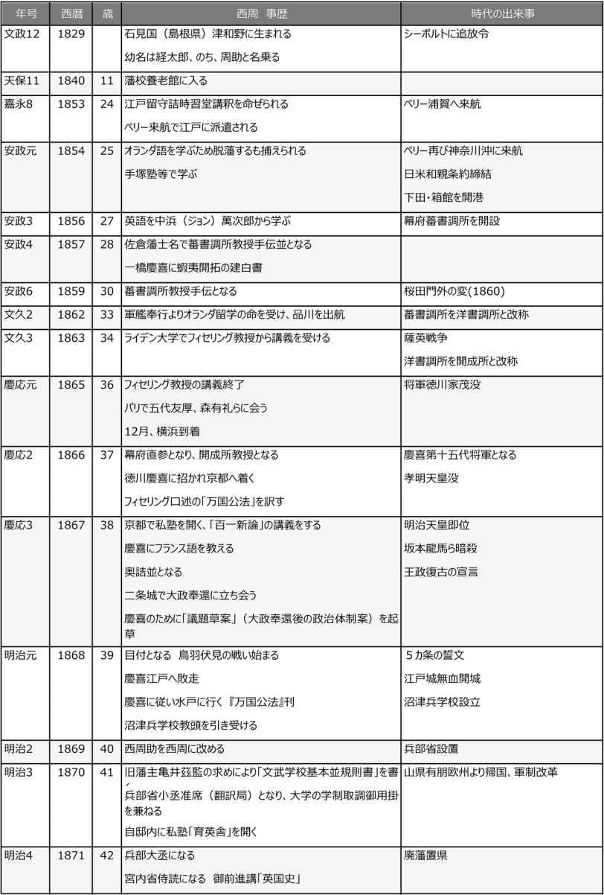
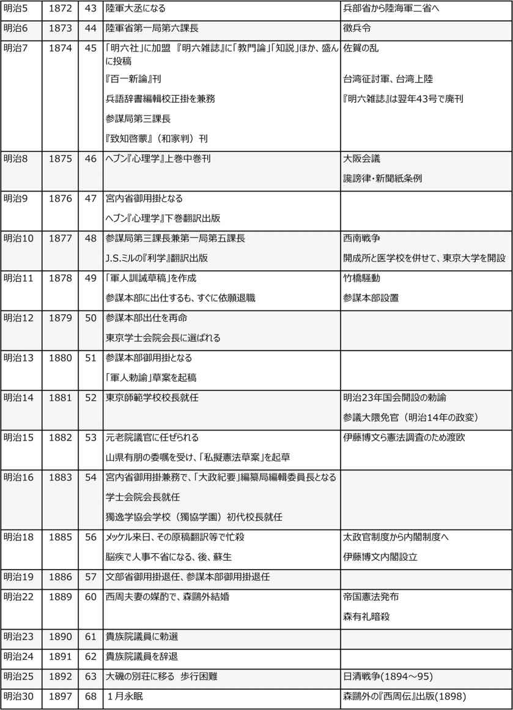
縮約
１．オランダ留学から幕府目付へ
幼少の頃
西周 は、1829年(文政12年)、石見国(現・島根県)の津和野藩藩医だった西時義の家に生まれた。名は周助。藩校養老館で学ぶ。秀才だった。20歳で元服すると、養老館の教師に任ぜられた。
1853年(嘉永6年)、周助24歳のとき、国を揺るがす大騒動が起きた。東インド艦隊司令長官ペリーが軍艦4隻を伴って浦賀に現れたのである。各藩はあわてて動きを見せた。津和野藩も趨勢に乗り遅れないため、藩士数名を江戸に派遣した。その中に周助も入っていた。江戸に出て、オランダ語や数学を必死で学んだという。
周助は迷った末、脱藩を決意した。友人のところを転々としていたが、江戸の藩庁方に捕えられ、藩から放逐の処分を受けた。放浪の身になり、オランダ語の臨時教師をしたりして食いつないでいたが、手塚律蔵という良き師にめぐり会った。周防(長州)の出身だが、佐倉藩に仕えたこともあり、江戸本郷元町に又新堂という塾を開いていた。周助はここで塾僕から講師の役割まで引き受けた。手塚は周助を気にいっており、英語が必要だとして、ジョン(中浜)万次郎の英語塾に通わせた。ここで、榎本武揚と知り合う。
手塚のつてで、佐倉藩陪臣となり、幕府の蕃書調所(のちの開成所)に就職することができた。佐倉藩の藩主は、老中筆頭格の堀田正睦 (正篤)である。
外国への留学を熱望していた周助だった。1860年(万延元年)に軍艦奉行木村善毅、軍艦操練所教授の勝安芳(海舟)を乗せて米国に向かった咸 臨丸 の渡米メンバーに志願するも選ばれなかった。6歳も年下の福沢諭吉に先を越されて悔しがった。
しかし2年後、オランダに行くチャンスが回ってきた。幕府がオランダに発注していた軍艦を受け取りに行く一行に、蕃書調所の同僚津田真道とともに留学が許された。
オランダのライデン大学のシモン・フィセリング教授の講義を受けるのが目的だった。古典的自由主義者のフィセリングは、性法(自然法)、万国公法学、国法学、経済学、政表(統計)学の5教科について教えた。しかし、理解力が及ばないとみたか、西欧「理性」論の流れや、法哲学論争史は避けて、法理解の骨組みだけを簡単に話した。
帰国後の1866年(慶応2年)、周助と津田は、開成所(蕃書調所の名称が変わった)に復職し、ついに教授(幕府直参)となった。
２．大政奉還の徳川慶喜とともに
一橋慶喜の側近になる
脱藩した後に起きたことを周助は、『自伝草稿』に詳しく書き残している。上述の留学のことなど、主にこの『自伝草稿』にもとづいて説明したものだが、以下に取り上げる大政奉還から鳥羽伏見の戦い、江戸城開城までについては、特に詳しく述べられている。
1866年(慶応2年)9月、周助と津田は京都に行くよう命令を受けた。この2カ月前、第十四代将軍徳川家 茂 が、大坂城で病没していた。京都で将軍後見職を務めていた一橋慶喜 は、やがて将軍職を継いだとき、最新の西欧諸国の事情に詳しい開成所教授連の知恵を借りたいという思惑があったのであろう。二人は慶喜の側近となった。
津田はすぐに江戸に戻ったので、周助一人が仕えることになった。しかし、仕事らしい仕事はなかったらしい。パリ万国博覧会参列の水戸・徳川昭武一行に西洋事情を説明しているが、随行の水戸藩士らは周助の話にほとんど興味を示さなかった。ただ、その中に渋沢栄一がいたことを『自伝草稿』に興味深く書き留めている。
随行者の中にいた木村某は、京都で私塾を開いていて、その生徒を周助に託した。さしたる仕事もなかったので、周助は引き受けることにし、居を移して私塾を開いた。わずか数カ月だったが、塾生の数は500人にも及んだという。福沢諭吉の塾も当時これほどの数は集めてはいない。
鳥羽伏見の戦い
1867年(慶応3年)の後半になって、私塾を平穏に続けていられない事態が起きた。尊王攘夷の志士たちが続々と京都に集まり、密会が行われ、いたる所で殺傷事件が起き、鎮圧と衝突していた。坂本龍馬が来るべき新政権構想の「船中八策」を密かに提案し、大久保利通、西郷隆盛と若手公卿の岩倉具視らが組んでの倒幕、王政復古の計画も動き出すことになる。
この頃、周助は、奥詰の役(慶喜の近習、現代の秘書官のような役割)となり、もっぱら文書の翻訳の仕事をしていた。重要な外交文書も含まれていたはずである。1867年(慶応3年)10月、二条城に緊急登城の呼び出しがあり、「大政奉還」の決意表明が行われた。周助もこの場に居合わせた。
「大政奉還」宣言後でも、慶喜はあくまでも日本国元首として、周助に親書の書き方などを相談していた。こののんびりしたムードは一変する。
慶喜の決断は、翌日には朝廷に伝えられ、受理され、「王政復古」の宣言がなされた後、慶喜に対して「辞官 納地 」の処分が決まった。官位の返上と幕領(400万石)のすべてを朝廷に返上しろというのである。これに、幕府側は激怒した。二条城周辺は緊迫した空気が張りつめた。それでも慶喜は戦いを避けたかった。一触即発を避けるため、慶喜は大坂城に下ることになる。旧幕府軍が二条城から大坂城へ退去した一週間後、薩摩藩の仕掛けた挑発情報が、大坂城にもたらされた。この情報は、大坂城内にあった1万5千の将兵を激昂させた。幕軍は、京都に向けて攻め上った。鳥羽伏見の戦いとなる。兵力は幕軍のほうがはるかに多かったが、中心となる将がおらず、戦略もなかった。押されて大坂城へと逃げ帰った。
周助は、「目付」(慶応4年1月元旦、目付に昇進していた)であるので、混乱して敗走してくる幕軍に、紀州路をとれと指示を出した。その頃慶喜たち首脳部は、大坂城を抜け出し、艦船で江戸へ逃げ帰っていた。
江戸開城と慶喜の蟄居
慶喜に10日遅れて江戸に帰還した周助は、引き続き目付という立場で江戸城に出仕していた。江戸城では、今後をどうすべきか議論し、方針を出すべきだったが、誰もそのことに手を付ける者はいなかった。肝心の慶喜は、問題収拾の方針を出さないまま、江戸城の無血開城が決まり、恭順の意を示して蟄居してしまった。官軍に抵抗する彰義隊の戦いの中、周助は負傷した兵士をかくまったりしていた。
混乱の中、慶喜は水戸に退去した。周助も随行を命じられた。やがて、新政府は徳川家に70万石を与え、慶喜は領地と定められた駿府に移った。藩士の多くは静岡に向かったが、無禄となった。周助は徳川のすべての職を辞退したが、地位も収入もなくなり茫然とするほかなかった。
そのような折、佐倉藩の旧知、手塚律蔵らが、耳よりな話をもたらしてくれた。静岡に、徳川の助力で「沼津兵学校」ができるというのである。校長となった安倍潜は、開所所の教授をしていた周助の教頭就任を大いに喜んだ。これは、すぐれた教授陣による近代兵学を組織的に教育した最初の兵学校と言われる。
1868年(明治元年)10月、周助は沼津に行った。この後、『自伝草稿』は途中で切れて終わりになっている。
沼津兵学校
1968年(明治元年)、西周は沼津兵学校の教頭を引き受けた。(教頭になってから、周助を改め周と名乗る)。沼津兵学校は、資業生(予科生)4年、本業生(本科生)3年の計7年であった。今日でいえば中学、高校、大学前期というところである。資業生には英語かフランス語を選ばせ、その上で万国地理、万国歴史、経済学まで教えている。本業生は、歩兵将校科、砲兵将校科、築造将校科の3科に分かれ、それぞれ小銃、大砲の製造から、銃撃、砲撃の実技まで含まれていた。
1869年(明治2年)7月に新設したばかりの兵部省の大輔である大村益次郎(長州出身)が沼津兵学校を視察に訪れた。これだけ組織的に軍事学を教えようとした学校はほかになかった。大村と西周がどのような話をしたか記録がない。大村は東京に帰ってすぐ、暴漢に襲われ、一命を落とした。一方、西周は大村の視察以来、兵学校教頭の職務に熱意を失い、辞表を提出する。しかし、静岡藩庁は退職を認めず、代わりに100日間の特別休暇を与えた。
郷里の津和野藩では、藩主亀井鴎監が西周の脱藩の罪を許し、藩制改革に当たってくれるよう望んでいた。西周はこの要望に応えて、1869年(明治2年)12月下旬、沼津を出発して津和野に向かった。津和野では、「文武学校基本並規則書」の草案を作成し藩主に提出した。
ちょうどそのとき、隣国の長州藩(この時は山口藩)で、大変な騒動が起きていた。
薩長軍として鳥羽伏見で勝利し、故郷に凱旋したが、かつてのような論功行賞がまったくなく、奇兵隊を解散して新たな常備軍をつくる計画も進んでいた。これに諸隊の不満は一気に爆発した。鎮圧に成功したのは1870年(明治3年)2月中旬、これはやがて起こる西南雄藩の士族の不満と爆発の前哨戦のようなものだった。
この事件は、兵学校を計画した西周の心に影響を与えたはずである。西周は、軍の反乱にもう一度遭遇することになる。西南戦争後の「竹橋騒動」である。
100日の休暇を終えた西周は、沼津に戻り、兵学校の教頭をつつがなく務めていた。
1870年(明治3年)9月、中央政府より静岡藩知事に連絡があり、藩命を受けて西周は上京した。兵部省の充実を図りたい山県有朋と山田顕義は、勝安芳を訪ねて人材の推薦を相談した。勝は西周を推薦した。出頭した西周は、兵部省出仕少丞准席を命じられ、学制取調御用掛を兼務することとなった。兵部省では翻訳局に属し、学制取調では来るべき大学設立の準備が仕事だった。
紹介を頼んだ山県は西周の仕事ぶりに満足した。しかし、西周にとっては、将軍徳川慶喜に最後の最後まで傍におり、徳川が支援する沼津兵学校の教頭であったことを考えて、複雑な気持ちにならざるをえなかったであろう。西周としては、家塾を開くことにむしろ関心があった。実際に、福井の松平春嶽の依頼で、福井藩士を教育する目的で「育英舎」を開いていた。
３．啓蒙家としての西周
フィセリング教授に師事
1863年(文久3年)8月から1865年(慶応元年)10月まで、西周はライデン大学でフィセリング教授の講義を受けた。習ったのは万国公法など法哲学を中心に経済学を含む政治学だったが、この授業を通して欧州での諸学を学び、わが国における啓蒙家の先駆者となった。
オランダ語には精通していたが、日本に当時なかった哲学の抽象概念や心理学や統計学などの用語をどのようにして理解できたのか不思議である。「理性」という言葉もなかった。帰国して家塾でこれらの学問について講義するが、そのような専門語に西周は独自に新たな訳語を考案しなければならなかった。今日「自然法」と訳されている言葉は、「性法」が用いられた。「人間の本来の性質」という意味である。
当時の欧州では、カントの理性論やヘーゲルの国家観のような観念論が、実証主義や経験論、歴史主義によって解体されつつある時代だった。西周が学んだのは、コント、ミルの実証主義だった。フィセリング自身は古典的自由主義者だったからであろう、その頃登場しつつあった社会問題や社会国家については教えていないし、サムライ青年としての理解力の限界を知ってか、論争の推移には触れず、当時の法理解の骨組みだけを簡単に説明するにとどまっている。
『百一新論』
京都・更雀寺で開いた私塾では、蘭語、英語のほか、留学で学んだことを中心に講義を行った。そのときの講義の内容は『百一新論』からわかる。西周自身の講義録はその後に起きた鳥羽伏見の戦いの中で散逸してしまったが、受講生の中にいた会津藩士山本覚馬と南摩 羽峰 が書いた速記録がのちに出版され、現在残っている。原稿を西周に見せ、校閲を頼み、序文も書いてもらった。
講義では、まず問を立てて、それに答えるという形式で行われたことがこの本からわかる。
たとえば、「物理と心理との区別は説明からわかったが、しからば教(広い意味の宗教)には物理を参考にする必要はないのか」という問を立てて、それに次のように答えている。
「さればでござる。教にはもとより観と行の二門に分かって論ぜねばならぬことで、その行門はもっぱら生理上にもとづいて法を立てたものでござれば、物理の論には及ばぬことでござるなれども、観門の方では物理を参考いたさなくてはならぬことでござる。しかし、物理と心理とを混同して論じてはならぬことでござるが、その物理を参考いたさなくてはならぬと申すのは、人間も天地間の一物でござれば、物理を参考いたさなくてはならぬでござる。これは物理と申すうちにもかの造化史の学を主とすることでござって、その造化史は、まず金石・草木・人獣の三域につて諸種の道理を論じ、かたわら地質学、古体学などと分かれて、この大地のできた初めにかえり、また人獣の部にてはアントロホロジー、訳して人性学といい、まず比較の解剖術より生理学・性理学・人種学・神理学・善美学、また歴史等を総べ論ずる学術をとりわけ物理の参考に備えねばならぬことでござる。すべてかようなことを参考にして心理に徴し、天道・人道を論明して、かねて教の方法を立つるをヒロソヒー、訳して哲学と名づけ、西洋にても古くより論のあることでござる。...」
「哲学」という言葉が初めて使われたところである。西周は、これら日本にかつてない概念を教えるとき、まず朱子学などで用いられる用語や考え方を援用して説明するという方法を用いた。受講生は、聞いたこともない日本語に訳された専門語を聞いても、さっぱり意味はわからず、教えるほうも、習うほうも大変だったと想像される。
明六社
1873年(明治6年)、欧米視察から帰国した森有礼の呼びかけにより、西周、西村茂樹、津田真道、福沢諭吉、加藤弘之、箕作 麟祥 らが参加して、「明六社」という結社ができた。森を除いて、あらかた旧幕臣であり、開成所に関わりをもっていた知識人であり、かつ福沢を除いて新政府の役所に何らかの関わりを持っていた人たちである。
機関誌として『明六雑誌』を出した。これは啓蒙雑誌だが、毎号3千数百部出ていたといわれ、その人気の高さがうかがわれる。1874年(明治7年)3月から翌年にかけて43号が出版された。中身はかなりレベルの高い論文で、学術的、思想的問題について、意見の発表、論争が行われた。
西周は、兵部省の官僚だったが、『明六雑誌』に盛んに投稿した。彼が書いた論文の中で代表的なものは、政教分離を唱えた「教門論」、新時代にあたっての知識の在り方を論じた「知説」、そして「人生三宝説」は以上を踏まえて人生や社会や国家を論じようとしたものである。
この3篇の論文で、西周は「フィロソフィー」の取り扱うすべての問題に答えようとした。啓蒙哲学者西周の思想の骨格をなしている。
「教門論」は祭政一致を目論む明治新政府内の保守派に対する洋学者側の批判を代弁するものである。
「知説」では、西周が家塾「育英舎」で講義した「百学連環」の要約である。森鴎外は、「百学連環」をエンサイクロペディアだと紹介した。当時の西欧の諸学問を、人文科学、社会科学、自然科学別に紹介している。西周は、科学的実証性が文明促進の第一条件だと考えていた。
「人生三宝説」は、『明六雑誌』が第43号で廃刊となったため未完であるが、この中には、「ジェネラル・ハッピネスを人間の第一最大の目標とすべきで、そのためには、第一に健康、第二に知識、第三に富有を大切にすることだ」と述べている。この3つの宝は、個人にとって大切だが、社会や国家の基礎でもあり、いかに道徳や法につながっていくことになるかを論じていく。
西周の関わった論争には、「国家の問題」から「国語表記」の問題までさまざまなものがあるが、この興味ある論争の場を提供し、啓蒙的役割を果たした『明六雑誌』は発刊よりわずか1年数カ月で廃刊となった。
政府は内外に問題を抱えていた。国内では佐賀の乱が起き、民権運動が高まり、海外では、帝政ロシアとの交渉、韓国および清国との交渉が難航していた。このような情勢に、1875年(明治8年)6月に政府は讒謗 律 (政府の悪口を言うのを取り締まる法律)、新聞紙条例を制定した。『明六雑誌』は、『郵便報知新聞』が発行していたが、『郵便報知新聞』が民権派に傾いていたことから、中級官僚が多かった明六社としては具合が悪く、政府の意向を受けて1875年(明治8年)9月、第43号をもって発行を自粛することにした。明六社そのものは中級官僚と知識人の親睦団体としてその後も存続し、西周も社員として出入りしている。
４．兵部省での勤務
兵部省に出仕した西周
1870年(明治3年)、勝の推薦により兵部省への出仕が決まった西周は、小丞准席(翻訳局)となり、大学の学制取調御用掛を兼ねた。翌年、兵部大丞となる。宮内省侍読として、天皇への進講にもあたっている。その後、兵部省は、陸軍省と海軍省に分離し、西周は陸軍大丞になるが、その仕事の内容は、もっぱら「兵語辞典」の編輯などだった。1874年(明治7年)には、参謀局第三課長となり、その2年後には、宮内省御用掛に転じていた。西南戦争が始まる1ヵ月前、1877年(明治10年)1月、西周は、再び陸軍省の四等官として、元の参謀局第三課長となった。第三課長の仕事は、欧亜兵制研究だった。山県が元開成所教授の西周に期待したのは、軍事実務ではなく、軍の理念、組織、規律といった近代軍の基本に関わる諸問題を、先進西欧諸国の事例を参考にして、検討することだった。西周にうってつけの仕事だった。
この頃、西南戦争が起きる前で参謀局は多忙のはずだったが、西周の仕事は相変わらず翻訳や調査的なものが多く、のんびり過ごしていた。
西南戦争終結後、参謀局は「参謀本部」として、軍行政機関である陸軍省から切り離された。これは軍の指揮命令系を統一する目的で行われたものである。天皇直属の機関となった。
西南戦争で明確になったのは、指揮命令系統の不整備だった。軍が軍律によって、あるいは軍律に基づく上官の命令によって統一的行動をとらなければならないのは、当然のことだが、明治の初頭では、軍首脳を形成する高級将校たち自身が、必ずしも指揮命令系統に忠実に従っていなかった。組織の中で、上官というのはどこまでを指すのかに問題がある。西周に課せられた問題は、軍の組織の秩序を守るためにどうすべきかであった。
そのようなとき、西南戦争での功績に対する恩賞が行われなかったことに不満をいだく下士官、兵卒の強訴組が、上官を刺殺して暴徒化するという事件が起きた。
竹橋騒動
西南戦争終結後、ほぼ1年後の1878年(明治11年)8月、皇居の北側にある竹橋西詰に配備されていた近衛砲兵大隊竹橋部隊の約260名が、大隊長の宇都宮少佐と週番士官深沢大尉を刺殺して、暴徒化した。「竹橋騒動」である。この部隊は、西南戦争の激戦地田原坂で功績をあげた勇士たちだった。終わった後、当然、恩賞あるいは昇給を期待していた。ところが、それどころか減給が言い渡された。政府側の理由は、戦費がかかり諸経費を切り詰めなければならない、ということだった。
強訴を企てた隊員たちは、大隊長を刺殺してしまった後は、暴徒のようになった。天皇に訴えようと皇居に押し寄せたところで説得され、全員投降した。2カ月後、53名の銃殺刑で事件は終わった。
「軍人訓誡」、そして「軍人勅諭」
竹橋騒動は軍首脳に大きな衝撃を与えた。直属上司、大隊長を下士官、兵卒が刺殺した。いかなる事情あれ、軍隊において許されるものではない。一件落着後、陸軍卿山県有朋の名で全軍に対して「軍人訓誡」が発表され、配布された。この「軍人訓誡」は、西周の「軍人訓誡草稿」をもとにつくられた。その内容は、西南戦争後に、陸軍将校に対して西周が連続講演を行った「兵家徳行」の内容に沿っている。軍人のモラルを説いたものである。
近代軍隊においては、上官の命令には絶対に従わねばならないとする「従命法」を西周らしく、その本質から説き起こしている。しかし、注目すべきは、この中で、西周は一般兵卒の「意義申し立て権」をはっきり認めている。このような制度は、欧米においても19世紀段階では存在しなかったのではないか。「竹橋騒動」の再発を防止するための配慮であろう。
1882年(明治15年)1月、軍人勅諭が発布された。「軍人訓誡」が元になったもので、西周の考えがそのままそこに示されている。
兵部省に勤務する間、西周は盛んに将校を相手に講演を行った。それらは「兵家徳行」、「兵賦論」として残っている。竹橋騒動が起きる前に行った「兵家徳行」の講演では、「従命法」の本質を万国公法にまで遡りながら説明し、「絶対服従理論」に対して、違法命令については抗議ができるとする「限定服従理論」の立場をとった。これにより、誰もが異議申し立てができる権限を持つとする考えを述べた。
竹橋騒動後に行われた講演「兵賦論」は、国民に対する兵役義務の強化を訴えたものである(この講演は断続的に以後3年間続く)。前半では、なぜ戦争をせねばならないかの歴史哲学的な説明をし、後半では清国を仮想敵国にした軍備拡張の必要性を説いている。
自由民権からナショナリズムへと移っていく時代の流れに沿って、西周の考えも次第に変わるのが読み取れる。
５．晩年の西周
交詢社
西周は1880年(明治13年)、「軍人訓誡」(明治11年)と「軍人勅諭」(明治13年)の草稿を書き上げていた。この後から、西周の活動の軸足が変化してくる。陸軍省や参謀本部から文部省、学会、政界へと活躍の場が変わってくる。
1879年(明治12年)9月、福沢諭吉は、慶応義塾出身者を中心にして社交クラブ「交詢社」を創立した。西周も常任議員に選ばれた。福沢と西周とは旧幕以来の友人関係であった。
交詢社は社交クラブとしてスタートしたのだが、知識の集積と発信というもう一つの目的が強調され、各地に支社ができ、会員が増えていった。東京からは有名人が派遣され、演説会が開催された。
最初は社交クラブと思っていた政府も、これが民権運動につながるものと思うようになり、背後で大隈重信がつながりを持っていると疑い始めた。政府筋の猜疑心は敵意へと変わり、これを察知して多くの官僚会員が一斉に退社した。さらに1881年(明治14年)、北海道開拓使の官有物払下げ事件が起き、藩閥政府は大隈の追い落としにかかった。しかし、民権運動、国会開設要求運動はいっそう勢いを増していった。
晩年の西周の関心は、こうした政治問題から離れ、教育、文化政策に移っていった。
交詢社とは関わりがなくなったが、福沢とは、「明六社」の会合で度々会っている。
学士会院会長
交詢社の発足の少し前、東京学士会院が設立され、初代会長に福沢が就任していた。学士会院は日本アカデミズムの象徴だが、当初から問題があった。文部省の諮問機関であるのか、独立の機関であるべきなのかで、意見が割れていた。けっきょく諮問機関でいいのではないかという結論になり、独立を主張する福沢は学士会院から脱会してしまった。その後、福沢は交詢社の設立へと向かう。
福沢の後を継いで、東京学士会院の二代目会長に、1879年(明治12年)6月、西周が選ばれた。西周は、「日本文典」の仕事に力を入れた。当時、まだ標準日本語は確立されていなかった。公文書はおおむね「漢文読み下し文」であり、しかも統一はされていなかった。私信は「候文 」であり、歌舞伎、講談、落語のたぐいは「江戸弁口語体」である。そこで、どうしても統一された日本語文典が必要とされるようになっていた。さまざまな意見が出たが、文部省の諮問機関ということで、積極的に文部省を動かすような活動はなされなかった。
東京師範学校校長に就任
詔勅によって10年後の国会と憲法が約束されると、国内の多くの勢力が動き出した。西周は、この喧騒から逃れる思いから、1881年(明治14年)6月、東京師範学校の校長に就任した。校長になるとすぐ、道徳学の1科を設けさせた。体をこわす1885年(明治18年)までの4年間勤務した。かなり気に入った仕事だったのであろう。
東京師範学校校長に就任した同じ年、「獨逸学協会」の設立にも参画した。これには、品川弥二郎、井上毅、桂太郎、青木周蔵ら政府高官が名を連ねている。名目はドイツ文化の移入摂取となっていたが、プロイセン憲法モデルの憲法制定を学界、教育界からもバックアップさせようという狙いがあった。
1883年(明治16年)に「獨逸学協会学校」(現・獨協学園)が設立されると、推されて初代校長になった。
軍事顧問メッケルの来日
明治初年まで旧幕以来のしきたりでフランス式だった軍隊は、普仏戦争でのプロイセン・ドイツの圧倒的勝利を受けて、ドイツ軍制へと傾倒し、多くの陸軍軍人がドイツへ留学を果たしていた。山県、桂ら陸軍省幹部は、早くからドイツ政府に日本での兵学校教育のための教師派遣を要請していた。そこで参謀少佐メッケルが選ばれて、1885年(明治18年)10月、日本にやってきて陸軍を指導した。
西周は、メッケルの通訳や資料の翻訳に時間を割いた。メッケルの講義は3年間つづいた。西周はその途中、中風で倒れた。一時人事不省になったが、奇跡的に助かり、それ以後、明治30年1月に亡くなるまで、杖をつく不自由な生活を送った。
中風で倒れたのは1885年(明治18年)11月だった。翌年には、文部省も、参謀本部も退く。学士会院会長の任も満了で終えた。1891年(明治24年)には一切の公職を辞して隠遁生活に入っていた。明治22年には、開通して間もない東北本線に揺られ、仙台に旅し、名所旧跡を訪ねて回った。東京に戻ると、今度は新橋―神戸間が全通したばかりの東海道本線に乗り、京都、奈良の旅を懐かしんだ。大阪では紡績工場まで見学している。途中静岡で下車し、徳川慶喜にも挨拶している。
補足
原著には、西周が外国語にあたる日本語訳を考案したことの成果を紹介していない。
当時すでに辞書にあったもの、中国古典に使われていたものを除き、厳密に西周がまったく新たにつくった訳語には以下のようなものがある(栗島紀子・東京女子大学「日本文学」1966)。卓越した漢語の知識、博識と言語に対する強い関心を持っていた西周でなければできなかったことである。
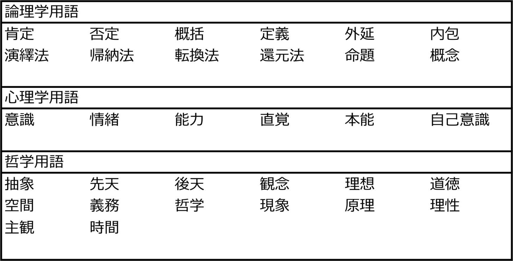
西周が独自につくった訳語で使われなくなったものが300語以上ある。中国古典から探してきたもの(意味は異なる)を入れれば、その数はさらに多くなる。
鴎外 森林太郎
山﨑國紀 著
人文書院
1992年12月
ISBN：9784409160591
目次紹介
序章 鴎外の出発
１章 ドイツ留学時代
２章 邂逅 と別離
３章 明治20年代
４章 小倉転勤
５章 日露戦争出征
６章 凱旋後
７章 再活躍期
８章 エリーゼ残像
９章 明治の終焉
10章 歴史小説に向かう
終章 一匹の獅子
原著者紹介
山﨑國紀 (やまさき・くにのり)
山﨑國紀氏は、花園大学名誉教授、文学博士。立命館大学大学院修士課程修了後、洛南高等学校教諭、立命館大学講師を経て、1982年に花園大学教授となる。日本文芸学会常任理事も務めた。2007年に『評伝 森鴎外』(大修館書店)を上梓した。この著作は鴎外没後80年余続いた鴎外史の枠組みを大改組したのをはじめ、多くの新資料と新説を提示し、従来からの鴎外研究を大きく前進させた記念碑的な著である。
1933年島根県益田市生まれ。森鴎外とは、同じ石見の出身(津和野に隣接)であることから、鴎外を研究のテーマに選んだという。
鴎外関連の著書には、『森鴎外―〈恨〉に生きる』(講談社)、『森鴎外―基層的論究』(八木書店)、『森鴎外の手紙』(大修館書店)、『森鴎外を学ぶ人のために』(世界思想社)がある。
要旨
森林太郎(鴎外 )は、津和野藩の御典医の家に生まれた。藩校養老館で学んだ。養老館は、儒学だけでなく、国学も教えた。4万3千石の津和野藩は、隣接する長州藩に負けないためには、優れた人材を育成するほかないという藩主の考えが、小藩としては異例なほど多くの人材を生んだ。
鴎外は、10歳のとき藩主に随行する父とともに東京に出た。ドイツ語を学び、第一大学区医学校予科(後の東京大学医学部)へ入学した。ドイツ留学が夢だったが、卒業試験の成績が8番だったため、官費留学の夢は消え、陸軍省に入り、1884年(明治17年)、念願のドイツ留学が実現した。4年余のドイツ滞在で陸軍衛生学を学ぶ。ドイツ滞在は、鴎外にとって最も華やいだ期間となった。
その後、順当に昇進し、1898年(明治31年)には、近衛師団軍医部長兼陸軍医学校長に就任する。その間、日清戦争が勃発、戦地に赴いた。
1899年(明治32年)、軍医監、第十二師団軍医部長となり、小倉での勤務を命じられた。この小倉での勤務を、鴎外自身は左遷と思ったようで、上司らとの人間関係が悪くなった。小倉時代の鴎外は、軍務に励み、文学活動を停止した。しかし、1902年(明治35年)、第一師団軍医部長に就任、東京に復帰。日露戦争で戦地に赴いた。
陸軍での地位は上がり、ついには、軍医としての最高位の陸軍軍医総監に昇進し、陸軍省医務局長となった。医務行政のトップになり、30年代までと違い、医局内部の誰にも気兼ねすることもなく、軍医官僚の仕事と、文学創作者としての二つの看板をかかげ、それぞれに業績を残すことができた。
文学活動作は好調で、多くの作品を創作し、若手文壇の人たちの力となった。
『即興詩人』の翻訳から始まり、『舞姫』など、自分の体験を基にする小説を多く書いたが、大正になってからは、現実の問題を歴史上の人物で表現する、『阿部一族』のような歴史小説に転じた。
軍医と文学というまったく異なる二つの世界で、ともにその最高峰に立つという偉業をなしたが、本人にとっては苦悩が絶えない人生だった。陸軍でも、文壇でも、激しい論争をする人だった。その性格は故郷津和野の養老館での教えが大きく影響したと原著者は指摘する。遺書に、故郷の墓石には、森林太郎の墓という文字以外は刻むことを禁じた。1922年(大正11年)、60歳で多彩な生涯を閉じた。
コメント
森鴎外といえば、医学者として、そし文豪として名をなした偉人で、陸軍の要職と小説家という二足のわらじで、よくあれほどの数の文学作品が書けたものだという驚異を抱く程度の理解しか持っていなかった。しかし、鴎外が生きた人生は、一生を通して精神的に常に平穏ではなかった。それは外部から与えられた苦痛ではなく、当人の心の中の葛藤だった。権力と民衆との狭間にある矛盾に苦しんだ姿を、この本から知ることができた。原著者の山﨑國紀氏は、「仮面をかぶって自己を隠ぺいして生きざるをえなかった鴎外の悲哀」を見る。この本のタイトルが『鴎外 森林太郎』となっているのは、人間としての森林太郎を描くためだったとしている。
西欧の文学を日本の土壌に植え付けた人として、やはり明治の創成期を成す主役の一人だった。政治からも経済からも離れた世界で、自己と戦わねばならなかった近代日本のパイオニアの姿をそこに見ることができる。
原著は、文学作品のそれぞれをそのときの鴎外の気持や状況からその意義を簡潔に紹介しているが、縮約では紙数の都合から作品名だけあげるにとどめた。
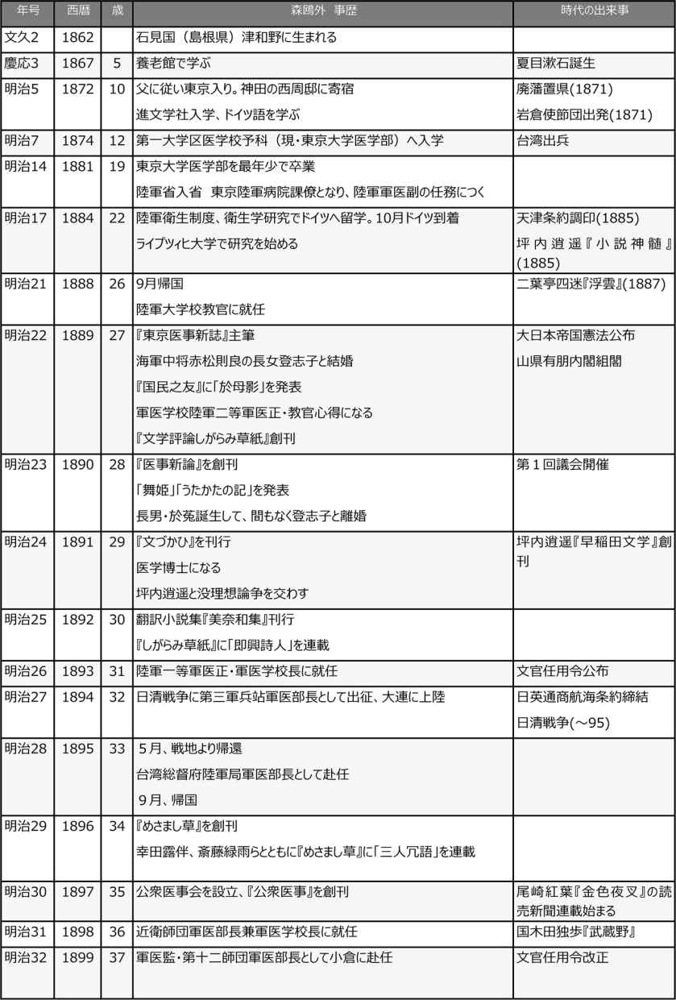
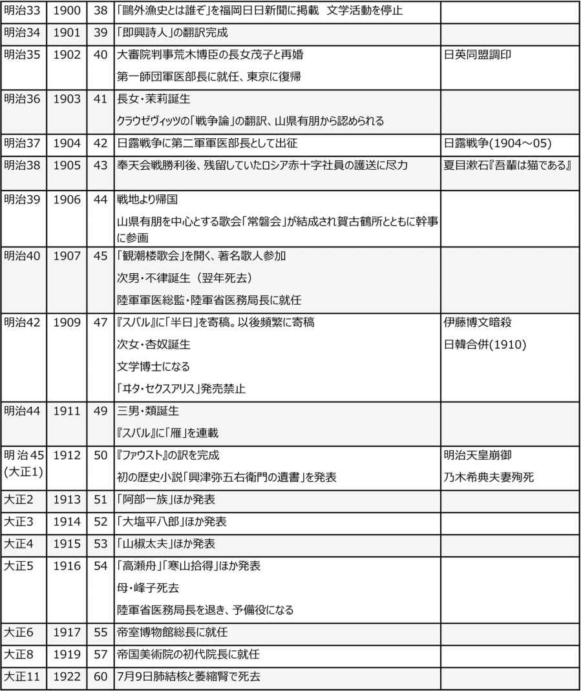
縮約
１．鴎外の生い立ち
津和野
鴎外(森林太郎)は、1862年(文久2年)1月、石見 国 津和野で生まれた。森家は代々、津和野藩の御典医を務める家柄だった。林太郎の父、静男は、周防 三田尻の出身で、医学の勉強のため津和野藩の森綱 浄 の下で働いていたとき、綱浄の娘峰子の婿となり、森家の当主となった。
津和野は、中国地方の山々に囲まれ、いまも卑俗化は免れて、静かで美しい谷間の小さな街である。ここを治める津和野藩は、維新時4万3千石の弱小の藩だった。しかし、歴史は古く、幕末の亀井茲監 に至るまで約600年続いた城下町である。
最後の藩主、亀井茲監は名君といわれ、尚学の精神に富んだ人だった。津和野藩は、他の小藩に比べて、子弟教育は内容的に格段に優れていた。隣接する長州藩の存在が大きかった。軍事大国の長州藩に力で対抗することはできない。人材をもって藩を守ろうとしたのである。
1866年(慶応2年)、鴎外が4歳のとき、藩の儒学者米原綱善から漢籍の素読を受けた。翌年、藩校養老館に入校した。ここでは、儒学だけでなく、蘭医学と国学をカリキュラムに加えていた。これによって、子弟たちに西洋の合理的精神と日本人としての矜持を持たせることができた。当時、勢いのあった儒学に代わる新しい思想として「国学」を主軸に据えたところに、津和野藩学の特異性があった。山陰の辺鄙な津和野という小藩から、秀れた学者や知識人が何人も輩出されたことは、異例のことではあったが、偶然ではなかった。
東大医学部を最年少で卒業
1872年(明治5年)、鴎外は、旧藩主に随行する父とともに東京に出て向島小梅村の亀井家下邸 に入った。その後、ドイツ語を学ぶことになり本郷壱岐殿坂にあった進文学社に入学。進文学社に通うために、神田小川町の西周 邸に預けられた。西周は、養老館の大先輩であり、森家にとっては遠い親戚関係にあった。このとき、明治の啓蒙家として活躍していた西周は43歳、陸軍大丞、宮内省侍読として天皇に心理学や博物学などを進講する役にあった。鴎外は、少なからず西の影響を受けたと思われる。
1874年(明治7年)、12歳のとき、第一大学区医学校予科(明治10年に東京大学医学部となる)に入学した。年齢が足りなかったが、入学願書に万延元年生まれと2年偽って入学した。1881年(明治14年)、満19歳という最年少で東京大学医学部を卒業した。
鴎外の卒業後の希望は、文部省留学生としてドイツに行くことだった。しかし、東大医学部の卒業試験成績が8番では、文部省からの留学派遣は無理だった。能力もあり、勤勉だった鴎外が成績8番に終わった原因は、卒業試験直前に肋膜炎 を発病したこと、下宿が火災で焼けて講義ノートを焼失、またドイツ人教授シュルツとの折り合いが悪かったことなどが重なったためと考えられる。
ドイツ留学を実現するため、陸軍省に入ることを決断し、1881年(明治14年)12月、陸軍省に入省した。
文学者しての顔
陸軍の軍医としての最高の地位に登った森鴎外には、もう一つの顔があった。文学である。数多くの傑作を残した。小説のほか、翻訳、評論も盛んに行い、早くから文壇での名声を得ていた。明治の文学黎明期にあって、西洋の文学をわが国に導入し、多くの文士たちに影響を与えた。与謝野鉄幹や石川啄木ら、明治に名を残した多くの小説家・詩人らの精神的な拠り所となっていた。文学論争も盛んに行った。
原著は、軍医としての経験と著作活動とを同時に、時系列的に説明している。鴎外の小説は、鴎外自身の体験や心の葛藤を基に書かれており、軍務官僚と小説家に分離して考えられない。しかし、ここでは、わかりやすいよう、医師としての鴎外と文学者としての鴎外を分けて紹介することにする。
２．軍医としての鴎外
陸軍に入る
文部省派遣のドイツ留学生になれなかった鴎外は陸軍省に入ることを決断した。
本来なら、ドイツに留学後、東京大学医学部で研究者の道に進みたかったのだが、その夢が消えた。
1881年(明治14年)12月、鴎外は陸軍省に入り、正式に陸軍軍医副(中尉相当官)に任じられ、東京陸軍病院課僚を命じられた。軍務に精励し、1883年(明治16年)には、陸軍衛生制度について、プラーゲルの書を基礎として編述した『医政全書稿本』12巻を作成するなどの実績をつくった。
そして、1884年(明治17年)、待望のドイツ留学を命じられ、8月に横浜港から欧州に向けて旅立った。
ドイツ留学
鴎外がドイツに赴いた1884年(明治17年)は、わが国において、松方財政下の中で、貧窮に苦しむ農民たちの騒擾事件が全国で起きていた。一方、鴎外が向かったドイツでも、皇帝ウィルヘルム一世と鉄血宰相といわれたビスマルクが権勢をふるっていた。鴎外にとって幸運だったのは、ドイツ医学や衛生学の勃興期だったことである。
鴎外は4年余ドイツに滞在した。1年から数カ月おきに、ライプチッヒ、ドレスデン、ミュンヘン、ベルリンに滞在し、ホフマン、ロート、ペテンコーフェル、コッホらすぐれた医学・衛生学の権威から指導を受けることができた。
鴎外はドイツ語が堪能だったが、ドイツ滞在でさらに磨きがかかった。ドレスデンでは、ザクセン軍団の冬季医学講習に参加したが、上流社会にも進出し、ダンスや観劇に興じるなど、鴎外にとってドイツ留学中の華の時期だった。
次のミュンヘンでは、約1年半、ペテンコーフェル師の指導を受けたが、ここで日本の地質学の発展に尽くした地質学者エドムント・ナウマン(ナウマン象の化石発見で知られる)と論争をすることになる。
ナウマンが行った日本の衛生状況や人々の生活についての講演を聞いて、鴎外は強く反発した。日本人に対する侮蔑だと憤った。現地の新聞に反論を書くなどして、ナウマンの理解不足を批判した。鴎外が祖国の誇りを守ろうとした熱情は納得できるが、日本各地を訪れて実情に接していたナウマンの指摘もあながち嘘ではなかった。鴎外は東京の上層社会のことしか知らない。勝敗はつかなかったが、鴎外としては、この著名人との論争をドイツ語でできたことが満足だった。
もう一つの出来事があった。1887年(明治20年)、ベルリンに戻って、コッホ博士に師事して、最後の衛生学研修に打ち込んだその年、カールスルーエで国際赤十字会議が開かれ、日本から代表としてやってきた石黒忠悳 の随員として鴎外も出席した。この会議でオランダ代表が、「欧州以外の地で戦いが起きた場合、そこに行ってわれわれは傷病者の救助をする必要があるのか」と質問したことに関連して演説をし、「アジアの域外で戦争が起きた場合でも、日本は救助に向かう」と主張した。これに対して満場から喝采が送られ、鴎外は大得意だった。
この二つのことは、鴎外が日本の存在を世界に訴えようとするナショナリスティックな感情が発露したもので、それは幼い頃、津和野で学んだことが鴎外の精神の内にあったのだと思われる。
このときの自負が、帰国後のすさまじいばかりの啓蒙運動に繋がっているとみる。
明治20年代
1888年(明治21年)、留学を終えて帰国した鴎外は、陸軍大学校教官となり、引き続き日本兵食を研究した。当時、問題となっていたのは、日本食と脚気の関係だった。海軍は、鴎外がドイツに留学する前の段階で、脚気の原因を米食中心による栄養障害とみて、麦飯混合の食事に切り換えつつあった。それを推進した中心人物は、1885年(明治18年)に海軍軍医総監になった高木兼寛だった。
しかし、鴎外ら陸軍は脚気の原因として細菌説を唱えていた。ドイツの研究者の中でも、米食原因説は賛否両論に分かれていた。鴎外は、1908年(明治41年)臨時脚気病調査会の会長になったが、この調査会が脚気の原因をビタミンB1の欠乏であると最終結論したのは鴎外の死後であった。
「洋行帰り」と言う自負から牽強付会(強引な自説主張)があった。その一方で、鴎外は欧州一辺倒主義に対しては批判的な一面も持っていた。勇み足や間違いはあったが、医務行政の分野で積極的に主張した。1889年(明治22年)に、「東京医事新誌」の主筆に迎えられ、この雑誌を使って盛んに医事評論を書いた。しかし、鴎外の論調はとかく戦闘的で、権威者に対しても痛烈な批判をし、しばしば物議を引き起こした。その後、鴎外が人間関係で苦しむ原因となった。
まもなく「東京医事新誌」から追放された。
小倉転勤
近衛師団軍医部長兼軍医学校長に任命されていた鴎外は、1899年(明治32年)、陸軍軍医監(少将相当官)に昇進し、小倉の第十二師団軍医部長への転勤が発令された。鴎外は、この小倉転勤を左遷と自分で決めつけていた。
東大医学部の同期に、小池正直がいた。小池は年齢が8歳上で、陸軍省に入ったのも鴎外より半年早かった。鴎外を当時の石黒医務局次長に推薦したのも小池だった。東大医学部卒業時の成績は、鴎外が8番で小池は9番だった。ドイツ留学も鴎外のほうが早く、医学博士になったのも鴎外が8年早かった。
陸軍部内での昇進はともに雁行していたが、鴎外は、自分のほうが能力的には優れているという優越意識が絶えずあったと思われる。ところが、やがて二人の均衡がついに破れるときがきた。1898年(明治31年)8月、小池が陸軍軍医監、陸軍省医務局長に昇進したのである。この小池の昇進により、その部下になったという敗者意識が、鴎外に必要以上に挫折感をもたらしたのではないか。小倉への転勤は、鴎外にとって屈辱的だった。
小倉に転勤した鴎外には、明治20年代に見られたような熾烈な啓蒙的表出はみられなかった。これを契機に、文壇からも遠ざかり、本分である軍医官僚に徹した。二足のわらじを履いていることの不利を悟ったのであろう。軍医としての職務に励んだ。
しかし、閑があれば北九州に散在する史跡を訪ねたり、参禅したりしており、いままでにないものを吸収した。中央を離れた雌伏時代は、鴎外にとって非常に重要な意義を持っていたのである。
1902年(明治35年)4月、鴎外は念願の第一師団軍医部長を命じられ、東京に戻った。この人事も小池医務局長の配慮によるものだった。
日露戦争
日本とロシアは朝鮮、満州の利権をめぐって決裂、1904年(明治37年)2月、ついに宣戦布告となった。鴎外は、第二軍軍医部長となり、広島から出航して戦地に向かった。それから2年近く、朝鮮、満州にいた。
この戦争についての明らかな意思は述べられていないが、日記では、白人の人種的な優越意識に対する反抗、日本の安全保障上の問題に触れている。しかし、他国への侵出については意識していない。白人が抱く黄色人種に対する偏見に、鴎外は強く反発しており、これはドイツ留学中にも実感したことなのかもしれない。ナウマンとの論戦に見られた激情も、このことに関連していると思われる。
1906年(明治39年)1月、鴎外は東京に帰還した。その年の6月、山県有朋を発起人とする「常磐会」(歌会)が結成され、鴎外も幹事として参画した。鴎外が山県に知られるようになったのは、小倉時代、鴎外が第十二師団の将校たちに行った、クラウゼヴィッツについての『戦争論』の講義録がきっかけだった。これを読んだ山県は鴎外の才能を高く評価した。
長州出身の元勲山県の実力は、当時仰ぎ見るほどのものがあり、とくに陸軍内部への影響力は絶大であった。鴎外の軍医総監昇任も、山県の後盾が大きくあったことは容易に想像できる。鴎外も山県をよく利用している。軍医局部内で石黒や小池の力に拮抗していくには、山県の力を鴎外は必要とした。山県との出遇いは鴎外を蘇らせた。
明治40年代
1907年(明治40年)、鴎外は陸軍軍医総監となり、陸軍省医務局長に就任した。
明治40年代は、鴎外にとって成熟の時代ともいえる。性格も温和になった。陸軍医務行政のトップになり、文学の活動も再開した。30年代までと違い、医局内部の誰にも気兼ねすることもなく、軍医官僚の仕事と、文学創作者としての二つの看板をかかげ、それぞれに業績を残すことができた。生活も大きく変わり、皇族や首相主催の園遊会、晩餐会など、上流階級の会にひんぱんに招かれるようになった。
このことが、鴎外に政治的傾向を持たせることになり、文学活動においても、政治力は大きな力になった。
３．文学者としての鴎外
鴎外の文学活動のはじまり
ドイツ留学から戻った鴎外は、医務行政を中心に、激しい批判を行った。しかし、いくら優れた医学への見識であっても、中堅の陸軍医務官僚である鴎外はこれに従わざるをえない。二等軍医正の非力さを痛く自覚する「実相」と、こうあるべきと思う「理想」の間で苦しむ鴎外は、自分の「理想」を文学の世界に求めていった。医事活動の挫折が拍車をかけ、文学に向かって奔流化する。
鴎外のまとまった文学活動の最初としては、訳詩集『於母影』がある。1889年(明治22年)に『国民の友』夏期付録として出版された。ゲーテ、レーナウ、ハイネ、バイロンなど西欧におけるロマン的情熱詩人を網羅し、当時の青年たちの血を沸きたたせ、注目を集めた。西欧の近代詩が自然な感情の流露として、青年たちに共感を与え、理解されようとしたのは、日本近代詩史の上で初めてのことだった。
闘争的な論争
『於母影』の原稿料50円を資本にして、鴎外は「文学評論しがらみ草紙」を1889年(明治22年)に創刊した。日本で最初の評論中心の同人雑誌である。
当時、西学(西洋に関する知識習得)は、利や財など功利主義の実学だと考える風潮が広がっていたことに対し、鴎外は、西洋からは「道義」や「風雅」をも学ぶべきだと当時の社会風潮を牽制した。
明治20年代は、新たな時代の到来を準備していた。実学的なモノへの意識から、精神性重視へと価値転換しようとする微妙な時期にさしかかっていたのである。鴎外には、新しい風を起こすのだとする気負いの意識がみなぎっていた。
本格的な文学論争として有名なのが、1891年(明治24年)から翌年にかけて、坪内逍遥と鴎外との間で行われた「没理想論争」である。「早稲田文学」を創刊した逍遥は、文学に対する「没理想論」を発表した。
逍遥は、「シェクスピアが偉大なのは、その作品が大自然のように深く広いからで、そのような大文学(衆理想)を自己の狭い小理想で捉え、判断を下すことは、その作品の正当な享受を誤らせる」と主張した。これに対し鴎外は、「世界は実だけで成り立っているものではなく、イデー(想)や美などの理想といったものが存在する」と明示した。
この論戦は数回にわたりくり返されたが、結局、二人の立場は「客観主義」と「主観主義」の違いであり、「現実派」と「理想派」の対立でもあった。逍遥がたどたどしくも自分の考えで論を展開したのに対し、鴎外はハルトマン美学を論法として用いて立ち向かった。
ドイツから帰った鴎外が、最も尖鋭的意識をはばたかせ、戦闘的な論争、評論を展開した時期であった。気負いや勇み足もあったが、当時の稚い日本の文化全般を活性化させたことは間違いない。
初期三部作
1890年(明治23年)、鴎外は『舞姫』を発表し、続いて、『うたかたの記』を出した。その翌年には、『文づかひ』を書いている。これら三つの作品を、鴎外の初期3部作という。いずれも、ドイツ留学中の体験を素材として書かれたものである。
とりわけ『舞姫』は、鴎外を苦しめたドイツ女性との関係が材料になっていると思われ、注目された。鴎外はドイツ留学中、一人のドイツ女性と深い関係になった。当時、そのようなことは、ドイツ滞在者の間でめずらしいことではなかった。ただ、普通は、関係を清算して日本に帰国するのだが、鴎外はそれをしなかった。エリーゼという名のその女性は、鴎外が帰国するや、忽然と一人で鴎外に会うため横浜に降り立ったのである。鴎外はその対応に苦労した。上司の石黒にそのことを叱責され、以後、鴎外は石黒に頭が上がらなくなるとともに、憎しみを増幅させた。
『舞姫』では、主人公の豊太郎は、某省から派遣されベルリン留学中に、エリスというドイツ女性と出会い、恋愛に発展するが、日本からドイツにきた大臣から帰国を勧められ、この機会を逃せば、本国も名誉も失うと、帰国を決心する。身ごもっていたエリスは豊太郎の帰国の意思を知り、発狂する。豊太郎は断腸の思いを残しながらも帰国の途についたが、心の中は闇だった。
この小説が、鴎外の実体験が原型になっていることは明らかで、実相と理想、官権と民意という鴎外が生涯悩んだ問題がここに現れている。小説というものが、実相をもとに、空想を生むものとする鴎外の考え方がここに見られる。以後、生涯を通じて鴎外が書いた小説のほとんどは、鴎外自身の体験が底辺にある。
『うたかたの記』は、日本人画学生の巨勢とドイツ娘マリイとの悲恋を書いたものである。『文つかひ』は、家と家の結婚である婚約者を愛せないデウペン城のイイダ姫から頼まれて日本の士官小林が1通の手紙をファブリイ伯夫人に渡す話である。その手紙の内容は、王妃の侍女にしてもらうことを願うもので、王宮に入ることで結婚を拒否することを図った。イイダ姫に宮廷で再会した小林は、その話を聞くという筋書きである。
雌伏の時代となった小倉勤務
1899年(明治32年)、鴎外は小倉勤務を命じられた。左遷と鴎外自身が思い込んだ小倉転勤は、鴎外に動揺を与え、文学への情熱を閉ざしてしまった。福岡日々新聞に「鴎外漁史とは誰ぞ」という文を書き、自己の文壇的「死」を宣言したほどである。
文学の仕事としては、『即興詩人』を訳了した以外は何もしていない。鴎外にとっては、中央を離れ、雌伏の時代を意味した。
文人たちとの交流
1906年(明治39年)、日露戦争から東京に帰還した鴎外の文学活動は花開くことになる。凱旋した年の6月、山県有朋を発起人とする「常磐会」(歌会)が結成され、鴎外も賀古鶴所とともに幹事として参画した。「常磐会」は、山県が亡くなるまで16年間も続き、鴎外の政治力も文学界の人たちに役立った。この常磐会の結成は、時の最大の権力者を抱き込んだ、文学的再生につながるものだった。
翌年3月には、「観潮楼歌会」の第1回が開かれた。会合には、竹柏会から佐佐木信綱、新詩社の与謝野寛、根岸派の伊藤左千夫らを中心に、石川啄木や吉井勇らも集まった。傾向の違う歌の達人たちを一堂に会すことができたのは、鴎外の力である。
初期三部作以来、ほとんど文学活動を控えてきた鴎外であったが、文壇では生きていた。
成熟の時代
1907年(明治40年)、鴎外は陸軍医務行政の首座に就き、文学的にも再活動に踏み切った。
1909年(明治42年)、「明星」の後をうけて、「昴(スバル)」が創刊され、鴎外は、与謝野鉄幹・晶子夫妻、上田敏、石川啄木、木下杢太郎ら青年詩人たちの大きな精神的支柱だった。
1912年(大正元年)、鴎外初の歴史小説『興津弥五右衛門の遺書』を書いた。明治天皇崩御とともに、乃木希典大将夫妻が殉死した。このことを、そのまま現代文学とせず、細川三斎公の家臣興津弥五右衛門が、大恩ある三斎公の死に殉じて自刃するという歴史小説として書いた。以後、鴎外は題材を歴史小説とする手法へと傾倒していく。
その理由は、『ヰタ・セクスアリス』の発禁などから、「現代」を舞台にすることに支障が出てきたことが一因である。鴎外自らが権力の一端にありながら、文学者としての批判意識を発動せねばならないことに矛盾が生じる。『ヰタ・セクスアリス』の発禁処置をとった官権と争うことができなかった。鴎外は、現代小説を断念し、歴史小説に原理的転換を計ったのである。史実そのものに語らせ、そこに批判性を込めようとする創作者としての意思があった。
鴎外成熟の時代である1909年(明治42年)から1916年(大正5年)に、鴎外が書いた作品のうち、原著で触れられているものを列挙しておく。
半日 (『スバル』、1909年3月)
魔睡 (『スバル』、1909年6月)
ヰタ・セクスアリス (『スバル』、1909年7月)
金貨 (『スバル』、1909年9月)
杯 (『中央公論』、1910年1月)
青年 (『スバル』、1910年3月―11年8月)
あそび (『三田文学』、1910年8月)
沈黙の塔(『三田文学』、1910年11月)
食堂 (『三田文学』、1910年12月)
雁 (『スバル』、1911年9月―1913年5月)
百物語 (『中央公論』、1911年10月)
かのように (『中央公論』、1912年1月)
興津弥五右衛門の遺書 (『中央公論』、1912年10月)
阿部一族 (『中央公論』、1913年1月)
大塩平八郎 (『中央公論』、1914年1月)
堺事件 (『新小説』、1914年2月)
山椒大夫 (『中央公論』、1915年1月)
じいさんばあさん (『新小説』、1915年9月)
最後の一句 (『中央公論』、1915年10月)
高瀬舟 (『中央公論』、1916年1月)
寒山拾得 (『新小説』、1916年1月)
４．鴎外の精神的葛藤
鴎外を悩ませた問題
鴎外は、三つの問題で悩んだ。一つは、ドイツ留学中で親しくなった女性との問題、妻(登志子と後妻の茂子)と母親峰子との不仲、医務官僚としての組織内の人間関係での葛藤である。これらを通して鴎外が体験による心の襞を、小説という形で表現した。
鴎外がドイツから東京に戻ってきた4日後に、突然、ドイツ留学中に深い仲になったドイツ人女性エリーゼが鴎外を追って日本にやってきたのである。この事件で鴎外は、家庭でも、また職場でも厳しい立場に追い込まれた。追い返したエリーゼにすまないという気持ちと、陸軍医務官僚という名誉を守らねばならない立場の板挟みになり、心はふさぐ。その苦悩が、小説へと向かわせ、『舞姫』を書くことになった。
母親の森峰子は、津和野の御典医森綱浄の娘で、鴎外の父、静男を婿として迎え、結婚した。気性が激しく努力家で、家の伝統を守る古いタイプの女性だった。「峰子日記」と呼ばれる日記を長く続けて書いており、これが鴎外自身の日記の裏付け、あるいは外からの観察事実として貴重な資料となっている。
御典医だったという森の家系に誇りを持つ人だった。息子鴎外(林太郎)が陸軍軍医の最高位まで登ったことには、大満足であったろう。しかし、そのような性格の姑と嫁の関係はうまく行くわけはない。
妻登志子は、来日したエリーゼに対する処理で苦悶した鴎外のことを気遣って、峰子がすすめた縁談だった。しかし、それがかえって逆効果となった。心ならずも結婚したが、気まずい関係になり、離婚することとなった。ちょうど鴎外が『舞姫』を書き終えた頃である。長男、於莵 が生まれた後、登志子は鴎外のもとを去っていった。
登志子は、鴎外が小倉に赴任していたとき、病死した。鴎外には恨みが残った。
左遷だと思い込んだ小倉赴任中の鴎外の独身生活を心配した峰子は、大審院判事荒木博臣の長女茂子との縁談を持ち込んだ。茂子も再婚だった。鴎外は40歳で、茂子が22歳だった。美人で、鴎外も気に入ったのであろう。仲睦まじく、小倉での生活を始めた。
しかし、東京に戻ってからは、茂子と姑峰子との心理的闘いが始まり、間に立って鴎外は苦渋することになった。長女茉莉 が生まれた。鴎外は彼女を溺愛するようになる。成人しても、その愛情は変わらず、まるで恋人に接するようだった。妻への思いは次第に薄れていく。鴎外が日露戦争の戦地から帰還して新橋駅に降り立ったときも、そこには茂子の姿はなかった。鴎外の肉親と茂子の関係は最悪の状況になった。母と妻の対立の間に立つ夫の苦悩を、小説『半日』の中で描いている。
鴎外死す
茂子は、茉莉に次いで次男・不律(6カ月で病死)、次女・杏 奴 、三男・類 を産み、3人はいずれも文筆家としての生涯を送っている。鴎外は、子どもたちの面倒をよくみた。子どもたちも、父を尊敬し、愛情を感じていた。(原著者山﨑國紀氏は、森類氏と親しい間柄だった)。
鴎外は、自分の能力を自負していた。それが職場での上司らとの人間関係を悪くした。地位の栄達を求めるよりも、自分の力を認めて欲しいという意欲、負けず嫌いの性格が禍したといえるであろう。そうした性格は、ドイツにおいてもナウマンとの論争や白人の黄色人蔑視に対する強い反抗などにも現れた。医学や文学の論争でも、相手に遠慮することなく、まっすぐに挑む姿勢は誤解を生むこともあった。
しかし、そのような性格が、医務官僚、文学者という相異なる世界で、最高の地位を得させた。精神的な苦悩なくしては、鴎外のすぐれた作品は生まれなかったであろう。
1922年(大正11年)7月9日、森鴎外は亡くなった。栄光と苦渋に満ちた60年の人生だった。遺書の中には、「官権(憲)威力や宮内省、陸軍省の縁故をすべて捨て、ただ石見人森林太郎として死ぬ」と記し、「森林太郎墓のほか1字も加えてはならない」と命じている。
新渡戸稲造の精神
いま世界と日本を憂う
佐藤全弘 著
教文館
2008年6月
ISBN：9784764269088
目次紹介
Ⅰ
１．『武士道』の今日的意義
２．『武士道』と日銀総裁
Ⅱ
１．新渡戸稲造の受難史
２．新渡戸稲造の愛国心、憂国心、国際心
３．橋をかけた人
４．新渡戸稲造の求めつづけた世界
Ⅲ
１．後藤新平と新渡戸稲造
２．矢内原忠雄と新渡戸稲造
原著者紹介
佐藤全弘 (さとう・まさひろ)
佐藤全弘氏は、日本の宗教学者、大阪市立大学名誉教授。大阪市立大学文学部卒。同大学院博士課程満期退学。同助教授、教授を経て、1994年定年退職。関西外国語大学教授、キリスト教愛真高等学校理事長を務める。2009年新渡戸・南原賞受賞。近代日本のキリスト教、特に新渡戸稲造を研究した。1931年大阪生まれ。著書には、『新渡戸稲造―生涯と思想』(キリスト教図書出版社)、『現代に生きる新渡戸稲造』(教文館)、『カント歴史哲学の研究』(晃洋書房)、『日本のこころと武士道』(教文館)、『新渡戸稲造と歩んだ道』(教文館)などがある。
要旨
本書は、原著者の8篇の講演や寄稿文を収めたものである。ここで話され、書かれていることの著者の思いは、正しく理解されていない新渡戸稲造の実像を読者に伝えたいということにある。
戦前は右翼から自由主義者として批判され、戦後は左翼からも帝国主義者だと名指しされることが多かった。5千円札に顔が出て以来、新渡戸の名前が一気に広がった。2000年に『武士道』出版100年ということから、急にこれの現代語訳や解説書が何冊も出版され、『武士道』だけが一人歩きするようになった。しかし、新渡戸について本を書く人ですら、新渡戸の多くの著書や論文を読んでいるわけではなく、本当に新渡戸を理解していない。いまもてはやされている『武士道』も、戦時中は軍部がそれを都合のよいように用い、戦後、基督教関係者の中にはこれが封建主義的なものだとして遠ざけるなど、正しい理解がなされていない。『武士道』を正しく理解するには、新渡戸の全人格と思想を理解しなければ、できないことである。
札幌農学校で農学を修め、東京大学で研究を続けた後、アメリカ、ドイツに留学して農業経済などを学んだ。その後、札幌農学校の教授に就任するが、体調を崩し、療養のため渡米。アメリカ滞在中に「BUSHIDO」を執筆、一躍世界にその名がしられることになった。帰国後、同郷の後藤新平(のちに逓信大臣、内務大臣、外務大臣。東京市第7代市長になる)から懇請を受け、台湾総督府の技師となり、台湾の糖業発展に貢献した。
台湾から帰国すると、京都帝国大学で植民地政策を教えることになる。その後、牧野伸 顕 文相からの要請を受け、第一高等学校校長に就任。俊英ぞろいの学生たちから尊敬された。しかし、文部省からは嫌忌され、自ら校長を辞任すると、後藤新平の依頼で国際連盟事務次長としてヨーロッパで活躍。帰国後は、毎日新聞社編集顧問として、軍閥の行動を激しく非難し、戦争反対を唱えた。
新渡戸は平和を求めた。世界が日本を正しく理解することを望み、日米が戦うことをなんとか食い止めようと努力した。『武士道』を通して、彼を高く評価したアメリカの人たちが、戦争直前に昭和天皇からの頼みにより米国を訪れたとき、打って変わって軍部の手先だろうと批判を浴びせた。カナダの国際会議に出席し、その帰途病にたおれ、新渡戸は帰らぬ人となった。
彼のなき後、矢内原 忠雄や岩波茂雄ら、新渡戸の弟子たちが戦時中も新渡戸の意思を守った。いま日本が、そして世界が直面する状況の中でこそ、新渡戸の思想、生きた姿に学ぶべきときである。
コメント
本書は、伝記として書かれたものではなく、講演および寄稿された論文を収録したものである。この中から、新渡戸稲造の業歴がわかる「新渡戸稲造の受難史」を中心にまとめた。
新渡戸は、キリスト者、農業研究者、国際機関トップ、教育者、時事評論家と、さまざまな顔を持つ。単に関わったというだけではない。それぞれにユニークな成果をあげているから驚きである。それらが凝集して新渡戸が生きた世界がある。それだけに理解しにくい。しかし、だからこそ噛みしめて味わう価値があろう。新渡戸稲造もまた、明治という時代でしか生まれなかった人物だという気がする。
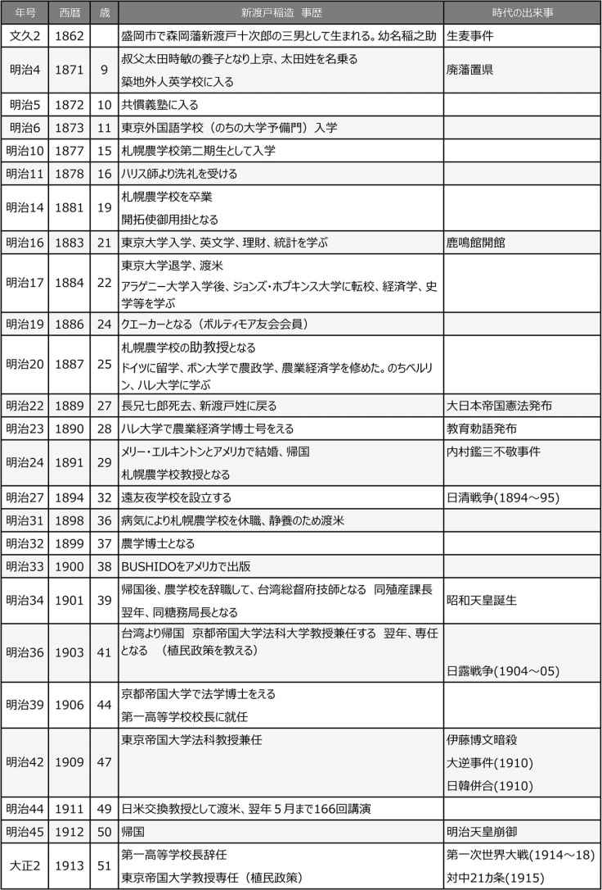
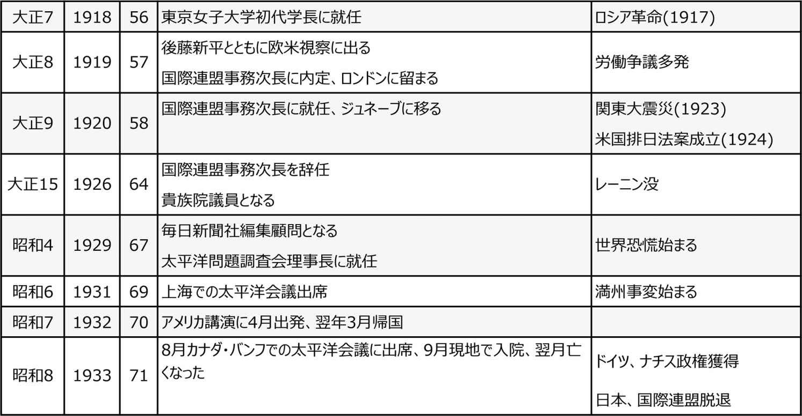
縮約
１．新渡戸稲造のプロフィール
新渡戸稲造時歴
本書では新渡戸の業績について、台湾総督府の技師就任のときから話が始まっている。それまでのことは、一般的に伝えられていることを手短に紹介しておく。
新渡戸稲造は、1862年(文久2年)、陸奥国岩手郡(現在の岩手県盛岡市)に、盛岡藩新渡戸十次郎の三男として生まれた(幼名は稲之助)。明治天皇の巡幸の際に、新渡戸家で休息された陛下の御前に跪いた稲之助に、父祖伝来の農業に勤しむようにとの御言葉を賜り、以後農政を志すようになったといわれる。
東京で洋服店を営む叔父の太田時敏の養子となり、東京へと旅立つ(名を稲造に改める)。東京で、まず英語学校で学び、翌年藩校「共慣義塾」で学んだ後、できたばかりの東京英語学校(のちの東大予科)に入学する。しかし、農学の勉強を決意し、札幌農学校(のちの北海道大学)の二期生として入学した。かの有名なウィリアム・クラーク博士はすでに米国へ帰国していた。農学校入学前からキリスト教に興味をもち、同期の内村鑑三とともに、牧師ハリスから洗礼を受けた。
農学校卒業後、北海道庁に奉職するが、学問を志して東京大学(のち、東京帝国大学)に進学。しかし当時の札幌農学校に比べ、東大の研究レベルの低さに失望して退学。1884年(明治17年)、「太平洋の架け橋」になりたいとアメリカに私費留学し、ジョンズ・ホプキンス大学に入学。後に妻となるメリー・エルキントンと出会うことになる。
その後、札幌農学校助教授に任命され、ジョンズ・ホプキンス大学を中途退学し、ドイツへ留学。ボン大学で経済学、史学等を学んだ後、ハレ大学に移り、農業経済学の博士号を得る。1891年(明治24年)に帰国し、教授として札幌農学校に赴任する。札幌時代に夫婦とも体調を崩し、農学校を休職してカリフォルニア州で転地療養した。この間に名著『BUSHIDO』を英文で書きあげた。日清戦争の勝利などで日本および日本人に対する関心が高まっていた時期であり、1900年(明治33年)に『BUSHIDO』の初版が刊行されると、やがてドイツ語、フランス語など各国語に訳されベストセラーとなった。日本語訳の出版は日露戦争後の1908年(明治41年)である。
２．さまざまな顔を持つ新渡戸稲造
新渡戸稲造は、キリスト者、農業経済専門家、植民地経営の研究者、国際機関のトップ、教育者、作家、評論家など、さまざまな顔を持ち、それぞれの分野で業績を残した。その活動と貢献の広さゆえに、かえって新渡戸の実像がわかりにくくなっている。
台湾時代・一高校長就任(1900-1913)
新渡戸が台湾総督府勤務を引き受けたのは、『武士道』が出版された1900年(明治33年)である。
台湾総督府の民政長官になっていた同郷の後藤新平より2年越しの要請を受け、
1901年(明治34年)、新渡戸は札幌農学校を辞職して、台湾総督府の技師になった。同殖産課長、同臨時糖務局長となり、台湾における糖業発展の基礎を築くことに貢献した。
その後、1903年(明治36年)には京都帝国大学法科教授を兼任、翌年に専任となった。京都帝大では、台湾での実績をもとに植民政策を講じ、京都帝国大学より植民政策の論文で法学博士の学位も受けた。
1906年(明治39年)、牧野伸 顕 文相の意向で、日露戦争後の日本のリーダー育成にふさわしい人物として、新渡戸が第一高等学校校長に選ばれた。それまでの東洋的文化色が強かった同校に、西洋色を取り入れ、愛読書でもあるカーライルの『衣服哲学』の読書を学生に薦めた。その新たな学風づくりの試みは、河合栄治郎などに影響を与えた。
一高は、天下の秀才が集まり、東大へ進み、高級官僚になって活躍するのが定石だった。学生たちは新渡戸を崇拝し、「新渡戸グループ」と言われた。その中には、矢内原 忠雄、河合栄冶郎、鶴見祐輔、前田多門などがいた。
しかし、新渡戸を嫌う者もおり、文部省は新渡戸に対して批判的だった。弁論部(委員に河合栄冶郎らがいた)が講演を依頼した徳冨蘆花の話が、大逆事件に賛成するような内容だったとして、講演を許可した新渡戸を謹慎処分にしたのも文部省だった。
日露戦争に勝利した後、清国から大勢の留学生が日本に来た。日本の近代化について学ぶのが目的だった。一高にも留学生が受験しており、新渡戸は入学を許可したが、それを文部省が取り消した。校長が学校について全責任を負うべきで、官僚が教育に口を出すべきではないと新渡戸は考えていた。これでは、校長として責任を負えないとして辞表を出す。
新渡戸は、一高在職中、1909年(明治42年)、東京帝国大学法科教授を兼任する。また、1911年(明治44年)、日米交換教授の制度創設により、一高在職のまま1年近く渡米。アメリカの人々は、『武士道』の著者だということで大歓迎し、講演は166回を数え、日本に対する理解を深めた。
しかし、一高の中では、校長在職のまま1年間学校を留守にすることに対する批判が上がっていた。
帰国後、1913年(大正2年)に、一高校長を辞職し、東京帝大教授専任となる。その後、拓殖大学学監、東京女子大学初代学長などを歴任。津田梅子の津田塾に対しても顧問を務め、梅子亡き後の学園の方針にも協力した。
東大教授・国際連盟(1913-1926)
新渡戸は東京帝大の教授となり、植民政策を講義していた。当時の講義の仕方は、教師が作ってきたノートを読み、学生にそれを聞き書きさせ、黒板を使って多少解説をつけるという方法だった。しかし、新渡戸は項目だけメモしたものを用意し、学生に向かって話をした。ユーモアやエピソードが入るので、ノートを取る側の能力が足りない学生たちの中には、高級官僚になる試験の準備に不利となるという批判もあった。
新渡戸は植民政策で、原住民の利益を第一にすることを主張した。これは当時のヨーロッパの植民地経営とはまったく異なるものだった。その内容については、矢内原忠雄の『新渡戸博士植民政策講義及論文集』(岩波書店 1943)で述べている。
新渡戸は、1920年(大正9年)、国際連盟事務次長に就任した。在職中、多くの職員から称賛された。ドラモンド事務総長が口下手だったので、ヨーロッパ各地で連盟のことを知らせる講演はほとんど新渡戸が行った。ユーモアを交えた講演は、好評を博した。ドラモンド事務総長は、「西洋の偏狭な世界に、東洋の寛容の精神をもたらした」と高く評価している。国際連盟時代の新渡戸の功績について、現在の日本の学者は理解していない。ジュネーブに行った新渡戸の活躍は、現在と違い、情報はほとんど日本まで届かなかった。当時、国際連盟は西洋人のために作った組織で、日本には関係ないと思う人が大勢を占めていた。
帰国から死まで(1926-1933)
新渡戸がヨーロッパに行っている間に、日本の政治情勢は大きく変わっていた。原敬内閣のもとで、日本はワシントン海軍軍縮条約に署名していた。この頃は、世界的にも平和を推進しようというムードがあった。
新渡戸は、1927年(昭和2年)帰国した。しかし、日本の雰囲気はすっかり変わっていた。ヨーロッパでナチスが台頭し、ファシズムが進行する中、日本の政界でも軍閥が権力をふるっていた。新渡戸は、政治の場から軍人を追放せよと英文毎日に文章を書いた。マルクス主義全盛の頃で、左翼側は新渡戸の考えは古いと批判し、軍国主義の右翼たちは、新渡戸の自由主義を退けた。その真ん中に立つ新渡戸は、左からも右からも批判を受けた。
1932年(昭和7年)4月に渡米するが、その前年に、新渡戸は昭和天皇から、「日本がアメリカと戦うことになってはいけない。あなたはアメリカに大勢の友人を持っているから、アメリカへ渡って各界の人に日本の事情を話してもらえないか」と頼まれた。排日移民法が撤回されるまでは二度とアメリカの土を踏まないとしていた決意をひるがえして、渡米して、フーバー大統領にも会い、1年間の滞在中に100回以上の講演を行った。しかし、そのとき日本国内では、軍人が首相官邸に押し入り、「話せばわかる」という言葉に耳をかさず犬養毅を射殺する事件が起きた。新渡戸が帰国する前に、日本は満州事変を非難する国際連盟決議に抗議して、連盟からの脱退を宣言した。
このままでは戦争になると危惧する新渡戸は、英文毎日に次々に意見を発表した。鶴見祐輔が編集していた『新自由主義』にも多くの寄稿を行った。新渡戸は、満州について、日本が莫大な投資をしてきたのに対してアメリカはほとんど何もしていない。帝政ロシアから共産主義のソ連になっても、満州への拡張政策は続いており、このままでは共産主義が中国に拡大する。それを押し止めるには緩衝地帯としての満州が必要だと主張した。
新渡戸は、1929年(昭和4年)に「太平洋問題調査会」(Institute of Pacific Relations)の理事長に就任して以来、亡くなるまで理事長を務めた。太平洋の周りの国々(独立国だけでなく植民地も含む)の民間人の代表が集まって、経済、貿易、人口問題、人種問題などを話し合う学術的な組織だった。1933年(昭和8年)8月、新渡戸はカナダのバンフで開かれた太平洋会議に出席し、その帰途病にたおれ、入院したヴィクトリアの病院で、10月に亡くなった。
没後から戦中(1933-1945)
戦時中、自由主義者はほとんど発表の機会を失った。矢内原忠雄も、河合栄冶郎も弾圧を受けた。日本の新聞は戦争に協力し、戦争に走る軍部に対する批判的役割を果たすことはなかった。そうした中で、矢内原は、自分の雑誌で、発言を止めなかった。新渡戸の弟子だった岩波書店の岩波茂雄は、矢内原をバックアップした。
太平洋戦争たけなわの1943年(昭和18年)、『新渡戸博士植民政策講義乃論文集』が岩波書店から出版された。これは新渡戸の講義を矢内原と大内兵衛2人のノートをつき合わせてまとめたものである。この中には、世界の土地はその土地を最も愛する人たちがそこで働き、利益を得るべきだという考えの新渡戸の論文が入っている。
３．軍閥台頭の警告
新渡戸と戦争
新渡戸が71年の生涯において出会った戦争は、4つである。
・戊辰戦争(1968年)
・日清戦争(1894/7～1895/4)
・日露戦争(1904/2～1905/5)
・第一次大戦(1914/7～1918/11)
新渡戸は、日清戦争にはクエーカー教徒の平和主義の立場から反対した。しかし、日露戦争のときは、メリー夫人ともども賛成した。当時のアジアの国際情勢とロシア帝国主義に対する強い警戒心があったからであろう。
1905年(明治38年)6月の『実業之日本』に「戦後の事業」と題して書いた記事には、この戦争を機会に日本が心がけるべき事柄として次のような項目を列挙している。
(1) 遺族の保護と死者への感謝
(2) 韓国の復活
(3) 借金返済
(4) 貿易増大
(5) 外国との緊密な交流
(6) 英語の熟達(外交・貿易)
(7) 思想・文化の双方向的交換
とくに外交に関して、負けたロシアは日本を軽侮しており、ドイツとフランスは日本を笑いものにしており、イギリスとアメリカは児邦視(子供扱い)し、アジアの諸民族は日本を猜疑している。これらを外交によって解除しなければならないと述べている。
危険の警鐘
第一次大戦の末期の1917年(大正6年)には、『実業之日本』に「戦時我国民の二大危険」という文を寄稿した。二大危険とは、「ドイツ主義」と「贅沢」である。ドイツ主義への軍部の傾倒が日本を軍国主義への道に走らせることになると憂いた。また、第一大戦の戦後景気でうかれる日本国民に対し、生活の向上は望ましいが、それが傲慢や成金を羨ましく思う心を生み、貧富の格差の拡大を警告した。
新渡戸が国際連盟事務次長の任期を終えて帰国した1927年(昭和2年)には、彼の心配は現実のものとなっており、軍閥が一段と勢力を拡大していた。
1932年(昭和7年)2月に松山で行った講演で、「日本を亡ぼすものは、軍閥と共産党だが、どちらが今危険かと言うと軍閥だ」と明言した。在郷軍人会や右翼の圧迫はひどく、入院中の枕元にまで押しかけての抗議を受けるほどだった。
死の床にありながら、新渡戸は鉛筆で字もヨレヨレになりながらも『編集余禄』の原稿を書いて大阪毎日新聞社に送り、死の20日前に掲載された文にはこう書かれていた。
「軍隊を持たぬほど軍縮している国は一つもない。理由はいろいろあるが、どの国も武装している。何らかの非常事態に備えている。この非常事態は普通ある悪い隣国からくると考えられている。"準備"自体が敵を招き寄せることを知る人は、少ししかいない」
４．武士道の今日的意義
武士道の道徳的意義
1900年(明治33年)に出版された『BUSHIDO』は、新渡戸が病気(神経衰弱)の療養のためカリフォルニア州モントレーのホテル滞在中に書いたものである。旅行中だからさほど多くの参考書を持参したわけではないのに、275人もの人の名前が出ているのは驚きである。
この本を書くきっかけとなったのは、ベルギーの法学者ド・ラヴレーから、「日本では宗教教育がないというが、宗教教育なしにどうして道徳教育ができるのか」という質問だった。その答えとして「武士道」がその役を果たしていると考えたのである。
武士道は封建時代の侍の道徳のバックボーンだが、武芸の精神ではなく、武士道によって日本人は道徳を学んだ。武士道は宗教ではない。しかし、武士道は、仏教と神道と儒教を基礎にして生まれたものである。
仏教からは、死を超越することを学んだ。いかなる災いが襲おうとも、それを平静に心乱さずに運命として受け止める武士道の精神はここから得た。神道は祖先崇拝と自然崇拝である。自然は、西洋の近代自然科学で考える単なる物質とエネルギーではなく、霊的なものだと考える。儒教は中国から日本にもたらされ、義、仁、勇、礼、誠、名誉、忠、克己といった徳の重要さを教えた。
多様性の文明と国家
新渡戸は、西洋近代文明だけが唯一の文明ではない。インドにはインドの文明があり、日本には日本の文明があり、中国には中国の文明がある。文字すらない未開民族であっても、そこにはその民族ならではの文化がある。世界は多様性であり、それぞれの価値を認めるべきだと主張した。キリスト教の伝道が日本で成功しない理由は、宣教師が日本の歴史を理解せず、無理矢理キリスト教の福音を伝えようとしたことにあると説明する。
その一方で、そのような多様性にも、底の底では一致するものがあると新渡戸は考える。たとえば礼儀についていえば、日本人とアメリカ人とではお辞儀の仕方が違う。だが精神は同じである。
新渡戸は、この本の最後で、武士階級が消滅したゆえ、武士が担っていた武士道という道徳もそれとともに消えた。しかし、日本の心は、武士道という形としてはなくなっても、武士道の精神はけっして失われていないと述べる。西洋でキリスト教と騎士道が結びついたように、日本では武士道にキリスト教が接ぎ木されるはずだというのが新渡戸の考えである。新渡戸は、キリスト教ではなく、キリストの心を学べと、学生たちに教えた。
新渡戸が書いた本
新渡戸が書いた本は約40冊にもなる。これらの中の主要図書の名前だけでもあげておこう(本書の年表に載っているもの)。
『日本土地制度論』(独文) 1890
『日米関係史』(英文) 1891
『ウイリアム・ペン伝』 1894
『農業本論』 1898
『農業発達史』 1898
『BUSHIDO』(英文) 1900
『随想録』(櫻井鴎村の訳) 1907
『帰雁の蘆』 1907
『THOUGHTS AND ESSAYS』 1909
『ファウスト物語』 1910
『修養』 1911
『世渡りの道』 1912
『Japanese Nation: Its Land, its People and its Life』 1912
『随感論』 1913
『折にふれ』 1914
『一日一言』 1915
『人生雑感』 1915
『自警』 1916
『婦人に勧めて』 1917
『米国建国史要』 1919
『一人の女』 1919
『Japanese Traits and Foreign Influences』 1927
『東西相触れて』 1928
『太平洋問題』 1930
『偉人群像』 1931
(注)以上の本で、アマゾンで単行本として入手不能(古書、電子版を含む)のものは数冊しかない。
５．教育者としての新渡戸稲造
草の根の教育
新渡戸は、第一高等学校の校長に就任した。一高で学ぶ者は、東大に入り、官僚になることを約束されたエリート中のエリートだった。その彼らが新渡戸を尊敬し、教えを乞うた。その門下生の中から文部大臣や東大総長が生まれた。
しかし、新渡戸が育てたのはエリートだけではなかった。
新渡戸は、1894年(明治27年、日清戦争が始まった年)、貧乏で小学校にも行けない子供たちの学校「遠友夜学校」を自費でつくった。1944年(昭和19年)まで続き、数千人の卒業生を出した。授業料は要らず、教科書もタダで貸す、試験も卒業もなく、先生は札幌農学校の生徒が教えた。新渡戸もそこで倫理(修身)を教えた。
1908年(明治41年)、『実業之日本』を創刊した益田義一(1869-1949)は国会議員も務めた経歴を持つが、ある日、新渡戸を訪ねてきて顧問になってほしいと頼んだ。地方から東京に出稼ぎに来て、ほとんど自由時間がない暮らしをしている若者たちが、パラパラと読んで自分の魂の養いになるような記事を書いてくれということだった。新渡戸は自分も望むところだと、亡くなるまで沢山の記事を書いた。
この雑誌に書かれたものは、『修養』、『世渡りの道』、『自警』という本にまとめられた。新渡戸は、書いた文章を家にいるお手伝いさんに読んで聞かせて、分からないところがあると書き直していたという。
女子学生の教育
新渡戸は女子教育に力を入れた。キリスト教の団体が主体になって1918年(大正7年)に創立された東京女子大学の初代学長を引き受けている。
普連土女学校は、新渡戸と内村鑑三がアメリカに留学中、クエーカー教徒がインドか日本に学校を建てたいという希望を聞いて、日本につくるよう勧めてできた学校である。この学校の特色は、看護婦や婦人団体で働けるような実業的な専門職の資格が取れる教育にあった。そのほかにも、いくつかの女子学校の創立や運営に手を貸した。
新渡戸の思想
新渡戸は、「国家は人間の全体を包括しはしない。人間は国家より大である。人間は自分の内に、この世の国や国家の一切の主張を超越するものをもっている。人間の無限の魂を、国家の限られた枠組みの中へ閉じ込めることはできない」と書き残している。
1933年(昭和8年)5月に載せた『編集余禄』(英文)には、次の一文がある。
「全人類が、兄弟となり、戦争が人類を引き裂くことはなく、戦争の噂が女性の心に恐れを抱かせることもない未来の夢を、私は夢見る。私の夢を嘲らないでほしい。けだし、夢こそ来るべき時代の先がけだからである。進歩はすべて一連の夢である」
内村鑑三の生涯
日本的キリスト教の創造
小原信 著
PHP研究所
1997年6月
ISBN：9784569570275
目次紹介
第１章 文明としての英語
第２章 内地留学と米国留学
第３章 流浪と思索の日々
第４章 ペン一本の預言者
第５章 試煉と名声のなかで
第６章 日本の天職
第７章 老いと迷いの残像
原著者紹介
小原信 (おはら・しん)
小原信氏は、青山学院大学名誉教授。国際基督教大学卒業後、東京大学大学院、イェール大学大学院で学び、同大学院で1966年「神学的議論からみたキェルケゴール」でPh.D.を取得した。1970年に和辻哲郎賞(日本倫理学会)を受賞。1979年から1997年まで青山学院大学文学部教授、1998年から2005年まで同大国際政治経済学部教授を務める。生命倫理・キリスト教に関する研究とともに現代の若者文化に対する言及でも知られる。1936年神戸市生まれ。
著書には、『状況倫理の可能性』(中央公論新社)、『孤独と連帯』(中公新書)『現代の病根』(PHP研究所)、『「若さ」という財産を無駄づかいするな！』(三笠書房)、『シングル・ルームの生き方』(新潮選書)、『世紀末の幸福論―いま生き方が問われている』(PHP研究所)、『いのちの継承』(新教新書)『iモード社会の「われとわれわれ」―情報倫理学の試み』(中央公論新社)などがある。
要旨
内村 鑑 三 は、1861年(万延2年)、高崎藩の武士の子として生まれた。10歳のとき廃藩置県で父は武士の職を失い、長男として兄弟4人の面倒を見なければならない貧困の状況に置かれた。東京外国語学校を出て、札幌農学校に入学。二期生のため有名なクラーク博士はすでに米国に帰っていたが、キリスト教に入信。同級の新渡戸稲造とともに宣教師ハリスから受洗。首席で卒業するが、学校には残れず、北海道開拓使、農商務省で水産関連の研究に従事した。浅田タケと結婚するが、狭い家での大勢の家族との同居や鑑三と考えが合わず、別居。精神的不安定な中、私費で渡米する。
アメリカでは、エルウィンの精神薄弱児擁護施設で看護人として働いた後、アマスト大学に入学して、シーリー総長に出会い、その人格に打たれ、キリスト教徒として目覚める。卒業後、ハートフォード神学大学に入るも、職業牧師養成の教育実態に失望し、半年で退学し、日本に帰国した。キリスト教国アメリカに理想を抱いたが、現実との乖離に失望、日本のよさを改めて実感し、日本において新しいキリスト教を打ち立てることを決意する。
しかし、日本では、定職もなく、非常勤講師としていくつかの学校を転々とするが、第一高等中学校で嘱託教員をしているとき、教育勅語に最敬礼をしなかったという「不敬事件」で学内から批判を受け、これを新聞が針小棒大に報道したため、騒ぎは全国に広がり、鑑三は非難の集中砲火を浴びた。失意する一方、孤独を武器に文筆をもって戦う決心をし、宗教・社会評論家として名をなした。
独自に創刊した新聞に評論を書き、本にして刊行、頻繁に講義や講演を行ったが、ライフワークとして創刊した『聖書之研究』では、亡くなるまで30年間にわたり聖書についての講義を載せ、多くの読者を得た。苦闘の中で書いた英文著書『How I became a Christian』が、ヨーロッパで翻訳出版され、内村鑑三の名が広く世界に知られることになった。
アメリカのキリスト教社会に失望して帰国したが、日本のキリスト教会の堕落、儀式化にも反対した。信仰は個人のものであるということ、すべては十字架にかかって死んだキリスト・イエスの贖罪にあると考え、いずれの教団にも属せぬ、無教会を名乗り、多くの弟子が集まった。基督再臨運動を行い、大勢の注目を集めるが、キリスト教会の主流からは猛反発を受け、自らも無教会主義が形式化されることを恐れ、晩年はもっぱら『聖書之研究』に力を入れた。
札幌農学校でさしたる収穫がなく、アメリカで失望、兄弟らとの不和、妻タケとの離婚、愛娘ルツ子の死、不敬事件による孤立、キリスト教会との対立など、苦難に満ちた一生だった。しかし、腐敗したキリスト教に代わる新しいキリスト教を日本において生み出すという信念は死ぬまで持ちつづけた。内村鑑三は、まさに荒野に叫ぶ旧約聖書の中の預言者のような存在だった。
コメント
原著『内村鑑三の生涯』は、文庫本ながら、700ページ近い大著である。内村鑑三という広く深い森の中を、著者は、気になる1本1本の草木や森の中の地形などに目を向け、しかも、行きつ戻りつ、横道に入ったりしながら主人公の後を追いながら進む。この膨大な内村鑑三の伝記からエッセンスを抜き出すのは容易ではない。
明治の政治にかかわったわけでもなく、学問に新たな開拓をしたわけでも、教育界に不滅の貢献をしたわけでもない。ただ真のキリスト教がいかにあるべきか、キリスト教を奉じる西洋というキリスト教国の宗教的堕落に対して、すばらしい国である日本において真のキリスト教を打ち立てるという信念を貫いた内村鑑三は、やはり明治の時代を代表する勇士の一人だという思いを強くした。
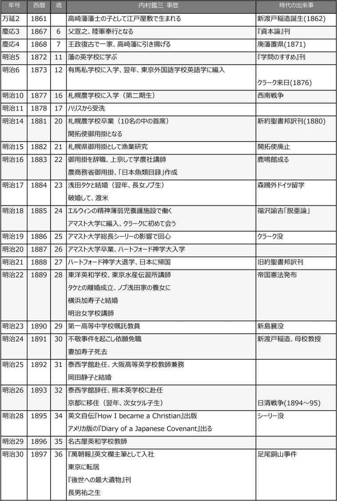
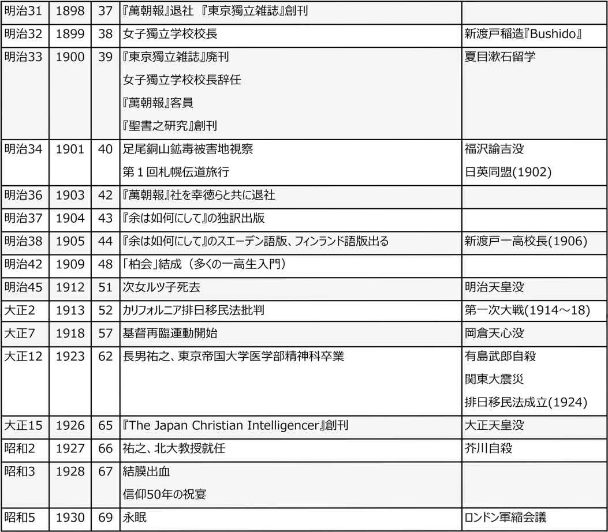
縮約
１．内村鑑三が歩んだ人生
生い立ち
内村 鑑 三 は、上州高崎藩の下級武士内村宣之 の長男として、1861年(万延2年)江戸にあった藩の武家屋敷で生まれた。明治維新まであと7年である。父は、儒学に長けており、幼い鑑三に「大学」の素読を教えるほどだったが、廃藩置県により藩士の身分を奪われ、その後は何もすることなく、酒にうさを晴らす生活になっていた。そういう父に代わり、鑑三が両親と4人の兄弟の面倒を見なければならなかった。当然、狭い家で大勢が暮らす、貧乏生活だった。
落ちぶれはしたが、父を通して武士というイメージを植え付けられた鑑三は、一生、キリスト教の裏面に日本的伝統としての武士の精神を持ちつづけた。最初抵抗した宣之だったが、鑑三の熱心な勧誘でキリスト教に入信した。
鑑三は、1873年(明治6年)、単身上京して、有馬私学校英語科に入学、1年後に、東京外国語学校に編入した。鑑三は、東京外国語学校を出た者の多くと同じように札幌農学校に入学した。学費も生活費も官費で賄われ、小遣いももらえるというのは没落した武士の子供にとっては魅力だった。
当時の札幌と言えば、人口が3千人足らずの小さな町だったが、農学校がここに移され、アメリカのアマスト大学の現職学長ウイリアム・S・クラークがはるばる海を渡って来日したことで、北海道の荒野の一角に、日本ではないような自由を謳歌する空気がみなぎる、まるで外国のような場所が生まれた。クラークは生徒と寝食を共にし、一期生たちに大きな感激と生きることの使命感を持たせた。
二期生として入学した鑑三のときはそのクラークはすでにアメリカに帰っていた。
ここで、上級生から強いられて「イエスを信じる者の誓約」に署名させられ、キリスト教徒となるが、本当に信仰心があったわけではない。熱心な信者になるのは後に宣教師M・C・ハリスから洗礼を受けてからである。ただ、渡された聖書を愛読した。
学校では、鮭、鱈、あわびなど水産関係の研究を行い、首席で卒業する。同学には、植物学で文化勲章を受ける宮部金吾、国際連盟の事務局次長になる新渡戸稲造がいた。飛び抜けた首席だったにもかかわらず、なぜか学校に残る機会が与えられなかった。開拓使の御用掛になり、その後、農商務省に入り、水産関連の研究成果を発表している。
渡米し、アマスト大学で学ぶ
1884年(明治17年)、鑑三は自費でアメリカに旅立った。結婚した妻タケとうまくいかず、別居状態になったことなどから精神的な苦境に陥り、理想を求めての渡米だった。経済的にはまったく余裕がなく、片道の旅費だけを用意して、行けばなんとかなるだろうと期待して旅立った。
ぺンシルヴァニア州エルウィンにある州立精神薄弱児の擁護施設で働き、施設の掃除、精薄児童の食事やトイレの世話に日々を過ごした。「ジャップ」と子供たちから罵られ、反抗に遭いながらも、怒りを抑えて、これは神が与える試練だと思い耐えた。手をあげようと思ったとき、自らに断食の罰を与えた。これを見て、児童たちの鑑三を見る目が変わった。しかし、奉仕することで、鑑三が救われることはなかった。
温かく接してくれたカーリン院長夫人らから、ハーバード大学や、ペンシルヴェニア大学への進学を勧められ、学費提供の申し出まであったが、友人の新島襄から熱心に勧められたアマスト大学を選んだ。アマスト大学はクラークの母校である。クラークにも会った。
アマスト大学でのシーリー総長との出会いが、鑑三の人生を決めることになる。最初の面接のときから、鑑三はシーリーに何か強く惹かれるものを感じた。以後、シーリーへの尊敬と愛着から、キリスト教に改めて目覚めるのだが、それはシーリーの知識や理論ではなく、彼の人格に傾倒したのだった。
信仰のことで心の揺れる鑑三に対してシーリーはこう言った。
「なぜ己を省みることを止めて、十字架の上に君の罪を贖ってくれたイエスを仰ぎ見ないのか。君の為すところは、小児が植木を鉢に植えてその成長を確かめようと毎日その根を抜いてみるのと同じだ。なぜ神と日光に委ね、安心して君の成長を待たないのか」
アメリカに来て、友人がスリに遭い、アメリカ人の誰もがしっかりと鍵をかける生活をしているのを見て、キリスト教の国がなぜこうなのかと強い疑念を抱いた。あこがれていたキリスト教国アメリカという理想と現実とのギャップに幻滅した。教会で働く者からチップを要求され、牧師が援助したことに対して謝礼を求める姿に驚き、落胆した。
アマスト大学での学問にはあまり身が入らなかった。卒業後進学したハートフォード神学大学では、指導が職業としての牧師の養成にすぎないことに失望した。半年で中退し、日本に帰国した。
アメリカの現実は、鑑三を日本、日本人のよさに目覚めさせた。日本には、日本の新しいキリスト教があってよいのではないか。日本において新しいキリスト教を起こすべきだという信念を強くした。
不敬事件
1888年(明治21年)、4年ぶりに日本に帰った鑑三は、アメリカでの失望をもとに、日本的キリスト教を広めようとして、若者の教育に力を注ぐようになった。その年の9月、新島襄の紹介で、新潟に行き、北越学館の仮教頭として赴任した。北越学館には、11人のアメリカ人宣教師のほか、のちに日本女子大学校校長になる成瀬仁蔵ら日本人教師5人がいた。校長の役割を果たしていた鑑三は、キリスト教と佛教も併せて教えるなど型破りの教育を行ったため、宣教師を主とした教師らからいびり出された。
東京に戻ったが定職はなく、明治女学校や東洋英和学校などで非常勤講師を勤めていたが、1890年(明治23年)9月から、第一高等中学校の嘱託教員となり、英語、地理、歴史を教えることとなった。
ここで事件が起きた。翌年、1月のことである。第一高等中学校で、全生徒の前で教育勅語が読まれた後、全員、教育勅語に向かって最敬礼するしきたりだったが、鑑三のお辞儀の仕方が足りないと、教師の一部と学生たちが騒いだ。それだけのことだったが、当時の新聞が誤解と中傷記事を報道したことから、「不敬事件」として全国的な騒動に発展した。世論の圧迫もあって、一高教員は辞任させられた。
鑑三は教育勅語に反対だったわけではない。この事件が鑑三を一躍、有名人にした。自宅への投石、地方で宿をとるのも断られるなどの迫害を受けることになった。背景には、キリスト教に対する反感があった。地方ではキリスト教徒への偏見が強まり、鑑三はキリスト教内部からも疎まれるようになった。
不遇の鑑三をますます痛めつけた。帰国して結婚したばかりの妻加寿子は、病気になった鑑三の看病をしながら、嫌がらせに耐えたが、心労のため事件から3カ月後、23歳の若さで命を落とした。結婚してまだ2年に至っていない。
この問題は長く後を引いた。ジャーナリズムは、鑑三の反論を新聞や雑誌に載せた。この事件は、鑑三に書くことへの情熱に火をつけた。事件のことだけでなく、社会や文明批評へとテーマは広がった。
事件の翌年、東京帝国大学文科教授である井上哲次郎が鑑三の不敬を批判する論文を雑誌『教育時論』に発表した。井上はキリスト教が国体に反するという考えの持ち主だった。鑑三は、これに対し、教育勅語に向かって低頭しないのと、勅語を実行しないのとではいずれが不敬として罪が大きいかと反論した。
鑑三は各地で教師を勤めるが、いずれも短期間の勤務に終わっている。友人からも、教会からも見捨てられたと思い孤独に陥った鑑三は、このような境遇の中で、『余は如何にして基督教徒となりし乎 』という英文自伝を書いた(1895年)。札幌農学校での入信のときから、渡米してエルウィンの精神薄弱児施設勤務、アマスト大学を経て、ハートフォード神学大学を中退するまでのことを記したものである。最初、アメリカで刊行を試みたが成らず、国内で警醒社が英文で出版し、これがドイツ、スエーデン、フィンランドなどヨーロッパ諸国のことばに翻訳され、著名な宗教家、哲学者らに読まれ、広がった。アメリカでは、『Diary of a Japanese Covenant』として出版された。
社会評論家として
これの印税で家計は一息ついた。不敬事件のおかげで、内村鑑三の名は全国に広まった。ジャーナリズムも、反論や意見を述べる鑑三の論文を喜んで載せたことから、鑑三は社会評論家として名を上げた。やがて、当時日本一の発行部数(12万部)を誇る『萬 朝報 』の英文欄主筆を要請され入社した(1年余で辞めるが、のちに再び客員となる)。
『萬朝報』には、鉱毒事件を書き、折から起きた日露戦争についても非戦論を唱えた。しかし、『萬朝報』社長の黒岩涙香が参戦論を展開しはじめたので、堺枯水、幸徳秋水らとともに退社した(1903年)。
当時の鑑三の文明評論的な文筆活動は冴えていた。1897年(明治30年)に箱根で行った夏季講演の記録である『後世への最大遺物』は、「われわれが死ぬとき、何かを遺して死にたい。人は後の世に何を遺せばいいのか。お金や立派な事業を遺すのも大事だが、思想もお金も事業も遺せる者と遺せない者がいる。だが、だれにでもできて、利益ばかりあって害のない遺物、それは、勇ましい高尚なる生涯だ」と語り、多くの人を感激させた。
明治30年代、鑑三は仲間と共同でいくつもの雑誌を創刊し、多くの論文を書いた。しかし、ライフワークとなったのは、1900年(明治33年)から死の直前まで続いた個人雑誌『聖書之研究』である。全357号に及ぶ、聖書の講義であるが、広くいろいろな問題を聖書をもとに説明した。全国の読者3000人あまりに30年間送り続けた。
彼の講演にも人があふれた。鑑三は、人に信仰をすすめるとか、信者をつくろうとはしなかった。聖書の研究に生涯をかけ、あらゆるテーマを聖書と関連づけ、人生を語り、世界を眺め、歴史を解釈したのである。信仰の制度化・儀式化をたえず警戒した。
65歳になっていた1926年(大正15年)に、『The Japan Christian Intelligencer』という英文雑誌を単独で発行し、自らの見解を毎月英文で発表した。
２．預言者としての内村鑑三の戦い
預言者
聖書には多くの預言者が現れる。預言者とは、未来を予想する人ではない。現在を批判し、こうしなければ将来悲惨なことが起きると警告し、こうすれば幸運が訪れるという希望を与える者である。内村鑑三が行ったことは、まさにこの預言者であった。
何を現状の中の不都合として見たのか。その第一は、現在のキリスト教が「教会主義」であり、伝統や権威を守ろうとし、形式化し、信仰の心を失っているという現実だった。期待するアメリカで見たものは、キリスト教とは裏腹の営利中心の堕落した社会だった。わが国でも、教会は儀式化した牧師の説教が行われる所だった。そこには、信仰する個人が欠落していた。
十字架にかけられて死んだイエスの贖罪こそが、キリスト教の原点であり、すべてだという啓示を受けた。過去の罪が許されるということではない。人類が持つ罪をすべて神にゆだねる心である。それによって悩みは消え、心の平和が得られる。
鑑三のその信念は、アメリカに行ってその現実に失望し、行くべき道を見失いかけたとき、アマスト大学のシーラー総長から教えられたものだった。札幌農学校で、何気なく洗礼を受けてクリスチャンとなった鑑三がそのとき回心した。そのことを人々に伝えなければならないと考えた。
無教会主義
教会で職業化した牧師が、儀式として行う説教は信仰ではない。そのような教会は不要であり、むしろ害であると鑑三は思った。聖書こそが教会なのであり、聖書の中に、無限の教えがあると悟った。
鑑三は、旧約聖書、新約聖書を絶えず読み、その解釈を文章とし講演して、人々に教えた。そのすべてが、死ぬまで30年間にわたり書き続けられた『聖書之研究』に残されている。鑑三の考えと行動を、人々は無教会主義と呼んだ。しかし、それもまた形式化される危険があった。信仰は個人のものである。鑑三はそう語り続けた。
外国人宣教師をひどく嫌った。アメリカ的キリスト教をまるで正統キリスト教のように押しつけ、一気に多くの人たちを入信させることが成果だとみていた。日本精神の源である武士道はまったく理解しようとせず、まるで植民地化の先導者でるかのような振る舞いががまんならなかったのである。
基督再臨運動
1918年(大正7年)、鑑三は、突然、キリスト・イエスの再臨を、外に出て広く大衆に語り始めた。キリスト教会の主流は、再臨を否定していた。鑑三は、旧約聖書は、人々にやがてイエス・キリストが救いのために地上に現れると約束したものであるが、新約聖書は未来の啓示だと教えた。キリストが再び、堕落した人類を救済するため地に現れると新約聖書は書いている。
鑑三は、この再臨の啓蒙を、他の同調する教派と共同し、伝道として行った。その回数は、60回近くに及ぶ。多いときは1000人もの聴衆が集まるほどの熱狂だった。約束はいつ果たされるかはまったくわからないが、必ず起きるという信念を語った。
大勢の弟子たち
鑑三には強いカリスマ性があった。激しい性格は、魅力でもあったが、つまずきの原因にもなった。鑑三の周囲には、大勢の弟子たちがいた。とりわけ第一高等学校の秀才たちが大挙して集まった。一高の校長をしていた新渡戸稲造が、内村鑑三に学ぶよう勧めたことが大きかった。彼らは、「柏 会」と名乗った(鑑三の住居がある柏木にちなんでつけた)。鑑三は、この会のメンバーを「まむしの卵」と呼んでいた。恐ろしく優秀な連中が集まった。
鑑三から話を聞いた者の中には、次のような人たちの名があることからも、その影響力の大きさがわかる。戦後東大総長となった矢内原忠雄と南原繁、前田多門、安倍能成、田中耕太郎、森戸辰男、天野貞祐の5人の文部大臣、さらに文学者では、鶴見祐輔、正宗白鳥らも顔を出していた。明治後半から大正にかけて、新しい時代の変わり目で、多くの知性あふれる青年たちを魅了してやまなかった。
だがすべてが鑑三に追従したわけではない。鑑三を尊敬して思想的影響を受けたが、それぞれの道を切り開いていった者、鑑三から離反した者、最後まで鑑三についていった者などいろいろである。「柏会」「エマオ会」、女性の会「ツル会」など、多くの会が存在し、それぞれに個性あるメンバーが集まっていた。
鑑三の生涯を一口で言い表すなら、風の中に立つ預言者ということであろう。苛烈な信仰を生きて、宗教改革の仕直しの必要を説いた、孤高のキリスト者だった。日本人であること、日本の魅力にこだわりつづけた人だった。
鑑三は常々、自分は2つの J を愛すると言った。Jesus と Japan である。古い英文の聖書の扉に、次の文を自筆で書きとめており、これが鑑三の墓碑にも刻まれている。
I for Japan;
Japan for the World;
The World for Christ;
And All for God
３．日本への愛着
日本的キリスト教
アメリカのキリスト教社会に失望した鑑三は、日本のキリスト教を打ち立てようと決心して帰国した。アメリカの堕落は、道徳の貧困だが、それと比べれば、日本には徳を重視する武士道がある。鑑三は、キリスト教は福音であって、道徳を教えるものではないと考えた。日本的な思想の上に、キリスト教が成り立つ。鑑三はこう記している。「武士道は日本国最善の産物である。しかしながら、武士道そのものに日本国を救う力はない。武士道の台木に基督教を接いだもの、これは世界最善のものであって、これに日本国のみならず、全世界を救う力がある」
鑑三は日本的なものとして、武士にこだわった。鑑三自身は、武士として行動したことは一度もない。もの心ついたときは、世は廃藩置県で、武士は失職していたが、幼いときに見た父の武士としての姿が心に刷り込まれていたのであろう。
日本人を強く意識したのは、アメリカを初めて訪れたときに経験した、アメリカ社会の道徳の低さだった。それと比べれば、日本の清潔さは比べようもなく高いものに思われた。異国の地にあって、余計に日本がふるさととしてイメージされたのであろう。その郷愁が、日本に新しいキリスト教をつくるという決心になった。
キリスト教国アメリカへの絶望
人々を熱狂の渦に巻き込んだ基督再臨運動だったが、鑑三はキリストの再臨をどのように考えていたのか。それはキリスト教についての思索の中から突然噴出してきた。鑑三自身、自分には大きな変化の時期が3つあったとする。1つ目は札幌農学校におけるキリスト教への入信、2つ目はアマスト大学での回心、そして3つ目が再臨信仰への目覚めである。
再臨運動の時期は、排日移民法、アメリカの第一次大戦への参入と一致しており、鑑三はアメリカに絶望した。平和主義者や社会主義者らの努力では、地上に平和は来ないと考えた。人類を人の力で変えることは不可能だとし、その事業を完成するのはキリストでしかなく、それこそが聖書の中心的な真理だという思いに達した。再臨思想は、人間学に基礎を置くすべての哲学を破壊せずにはおかない。
４．家族
内村鑑三の性格
鑑三は、気難しい、頑固な性格だった。潔癖であるが、偏狭であった。長男で、幼くして父の家督を継ぎ、家族の面倒を見なければならないという負担から、家長のような立場で弟妹の上に立った。弟妹たちも、鑑三に劣らず気が強く、兄の態度が気にくわなかった。兄弟間の不和は、母ヤソの入院をめぐってとくにひどくなった。鑑三のそうした性格は、札幌農学校でも、アメリカのアマスト大学でも現れていた。
人とのつき合いも下手だった。気持ちがうまく表せない、不器用さが目立った。だが、威厳さが感じられ、演説する声には低さ、太さ、リズムがあり、聴衆を魅了した。
家族
鑑三は、弟3人、妹1人を持つ長男である。弟達三郎は、札幌農学校を第7期生として卒業し、一時、鑑三の編集などを手伝ったこともあったが、後半はひどい不仲になり、終生和解することはなかった。
廃藩置県で、藩士の身分を失ってからすっかり生気を失った父だったが、なぜか鑑三は尊敬し、鑑三のよき理解者だった。父の中に、自分は経験したことのない武士の面影を抱いた。終生、武士道が日本人の美徳の根源と考えた。父も、鑑三の説得でクリスチャンになり、鑑三の書いたものを熱心に読み、不敬事件でも、鑑三に味方した。しかし、母ヤソに対しては冷たかった。
鑑三が同い年の浅田タケと結婚したのは、23歳のときだった。タケは、京都の同志社と横浜の共立女学校で学び、インテリで、ハイカラな女性だった。新島襄から洗礼を受けていた。しかし、3部屋しかない狭い家屋に、両親、弟妹4人が暮らす生活は、タケにはひどすぎる環境だった。虚栄心もあり、勝気なタケは、結婚して半年で家を出た。鑑三の女性に対する見方にも問題があった。アメリカ人の風習を知り、デモクラシーにも通じていた鑑三だったが、なぜか女性には高い学問は不要、夫に従順に尽くすことが美徳という儒教的な考え方をしていた。
タケが離婚を拒否したため、別居状態は続き、鑑三は精神的に悩んだ。悩んだ鑑三は、破婚するとすぐに計画もなく、アメリカに旅立った。タケは鑑三のアメリカ留学中に娘ノブを生んだ。タケはノブのために長らく復縁をせまっていたが、4年後、離婚が成立した。離婚後、長女ノブは、タケの兄に子供がいなかったので、浅田家の養女になった。
鑑三は4度結婚している。タケと正式に離婚した後、少年時代の遊び仲間だった横浜加寿子と結婚した。翌々年1月に不敬事件を起こし、加寿子は鑑三の面倒を見ながら、嫌がらせに耐えたが、その年の4月に疲労のため亡くなった。翌年、築山モトという女性と結婚したようだが、詳細はわかっていない。すぐに別れ、同じ年に岡田静子と結婚し、生涯連れ添った。静子は、京都地裁判事の娘で、おだやかで古風な女性だった。2人の子供、ルツ子と祐之 を産んだ。偏屈な夫を支え、仕事の手伝いもした。
鑑三は、娘ルツ子をこよなく可愛がったが、18歳の若さで亡くなり、鑑三は深い悲しみを味わった。祐之は、第一高等学校に入学し、野球選手として大活躍し、不敗の投手、好打者として、長嶋以上の人気を博した。勉強もよく出来、東大に入り精神医学を学んだ。ドイツに留学後、北海道大学の教授となった(のちに東京大学の教授となる)。鑑三は、野球で活躍する息子が自慢であり、自分が果たせなかった母校(札幌農学校が北大になった)の教授になったことは、事のほか喜びだった。鑑三は祐之に信仰を強要しなかったし、祐之も宗教には関心がなかった。キリスト教について父と息子の間をとりもったのは、祐之の妻となった美代子だった。祐之が野球選手として活躍した時期は、鑑三が基督再臨運動に没頭していたときと重なる。祐之の存在は、父鑑三に欠落したものを補い、名誉挽回を果たした。祐之は、戦後もプロ野球のコミッショナーとして知られ、生涯野球に関わり、1980年(昭和55年)に亡くなった。祐之の妻、内村美代子は『晩年の内村鑑三』を教文館から出版している。
岡倉天心
斎藤隆三 著
吉川弘文館
1986年5月
ISBN：9784642050442
目次紹介
１ 有り明けの燈火
２ 東京移住と大学入学
３ 文部省出仕
４ 新美術の黎明
５ 東京美術学校の設立
６ 八面六臂 の活躍
７ 学界に捧げた二大業績
８ 江戸の夢を今にして
９ 急転失脚
10 日本美術院の創立
11 新画樹立を提げての奮闘
12 早くも到った秋風一陣
13 国外に求めた別天地
14 米国の初１年
15 英文著書『茶の本』
16 国内の理想郷
17 日本美術院の五 浦 移転
18 文展開会と国画玉成会
19 晩年の境地
20 冬を待たず巨星隕 つ
21 歳とともに高まる追想景慕
原著者紹介
斎藤隆三 (さいとう・りゅうぞう)
斎藤隆三氏[1875-1961]は、明治8年生まれ、明治35年、東京帝国大学文科大学国史科を卒業した。大正3年日本美術院の再興に際し、横山大観らと経営者の一人となり、日本美術院常務理事を長年務めた。昭和7年「江戸時代前半期の世相と衣裳風俗」の論文により文学博士となり、昭和17年には財団法人岡倉天心偉績顕彰会専務理事に就任した。三井家家史並に事業史編纂の仕事に携った(1907年～1916年)。明治期より昭和期にかけて風俗史、郷土史、美術史等について多くの著書がある。本書は、昭和35年に書かれたものだが、文体には明治の面影を残し、名文である。天心を間近に見ていただけに、秀逸な人物誌となっている。
要旨
岡倉天心は、横浜で父親が福井藩の貿易商店の当主を務めていたことから、幼少から多くの外国人と接し、英語が話せたが、7歳のとき塾で英語を習った。東京外国語学校に入学するが、開成学校(在学中、東京大学に改称)に移った。同校教師として来日したフェノロサと親しくなり、通訳や翻訳を手伝いながら、古美術に関する多くの知識を得ることになった。
18歳で東京大学を卒業、文部省に入る。その後、天心の才能を高く評価していた当時東京大学副総理だった浜尾新 が、同省の専門学務局長となり、天心の活躍の道が開けた。東京美術学校を設立する計画が持ち上がり、その準備を任された天心は、28歳の若さで同校校長に就任した。帝国博物館理事にもなり、フェノロサの調査に同行するなどで古社寺に残る美術品について精通する。この頃の天心は、官界にあって縦横な活躍をし、勢力をふるった。
しかし、部下の恨みから誹謗中傷の流言で、東京美術学校を追われ、横山大観ら若手日本画家と日本美術院を創立する。ここで新しい日本画の研究を行うが、大観や春草らの線を用いない新画描法が「朦朧画」と呼ばれ悪評を受け、無視される存在になった。画壇からも日本画愛好家らからも、そして文部省にも嫌忌された。
天心の活躍の舞台は海外に移った。インド滞在中に書いた『The Ideal of the East』(東洋の理想)が話題になり、西洋に天心の名が広まった。その後、大観、春草らを連れて、米国に行く。米国では、講演のほか、大観、春草の展覧会を開き、大好評を博した。ボストン博物館を訪れ、東洋美術の分類等の仕事を委嘱され、1年のうちの半分をボストン博物館の東洋部長として仕事をすることを約束した。滞在中にニューヨークで出版された『The Awakening of Japan』(日本の覚醒)が注目を集めた。
日露戦争で昂揚感に満ちた日本で、新しい日本画のあり方の啓蒙に努める天心に対して官も民も冷たかった。日本美術院を、天心が隠棲の地と決めた茨城県の五 浦 に移し、大観、春草、観山、武山の4名が家族ごと引っ越してきた。ボストン博物館では厚遇を受け、自由に精力的に仕事をこなしたが、日本にいては最早かつての旺盛な気力は消えうせていた。米国にいては、日本の美意識の崇高さを想い、さらにそれを高め、世界に示さねばならないと考えた。
1913年(大正2年)9月、夏を過ごすためにつくった雄大な自然を望む赤倉の山荘で、家族、弟子たちに囲まれ、息を引き取った。享年51歳だった。
同時代の日本人が理解するには、天心はあまりに大きく、はるか先を見る眼を持ち、常識を超える理想を抱いていた。東洋は西洋よりもむしろ優れており、日本において東洋の美は凝縮されていると世界に向けて、何ら臆することなく語り、西欧の人々を驚かせ、惹きつけた。
コメント
今日、英語ができる人は増えた。だが、自ら英語で本を書き、海外の人たちを魅了させる人が何人いるだろうか。しかも、西洋に媚びするのではなく、西洋を批判し、日本のすばらしさを主張するのである。日本人が嫌われ、黄禍論が世界に蔓延しつつあったときである。そのような本を3冊も書いた。同じように西洋を感服させた本に新渡戸稲造の『Bushido』がある。なぜかこの本はいまも日本でもてはやされる。しかし、岡倉天心の『東洋の理想』『日本の覚醒』『茶の本』を薦める人はいない。当時にあっても、天心が書いたこれらの本が日本語に訳されるのは、天心の死後16年過ぎてからだ。
英語ができるだけではダメだ。日本人向けに書かれたものを英訳したところで欧米人の心を動かすことは難しい。いま、岡倉天心が見直されるときではないか。
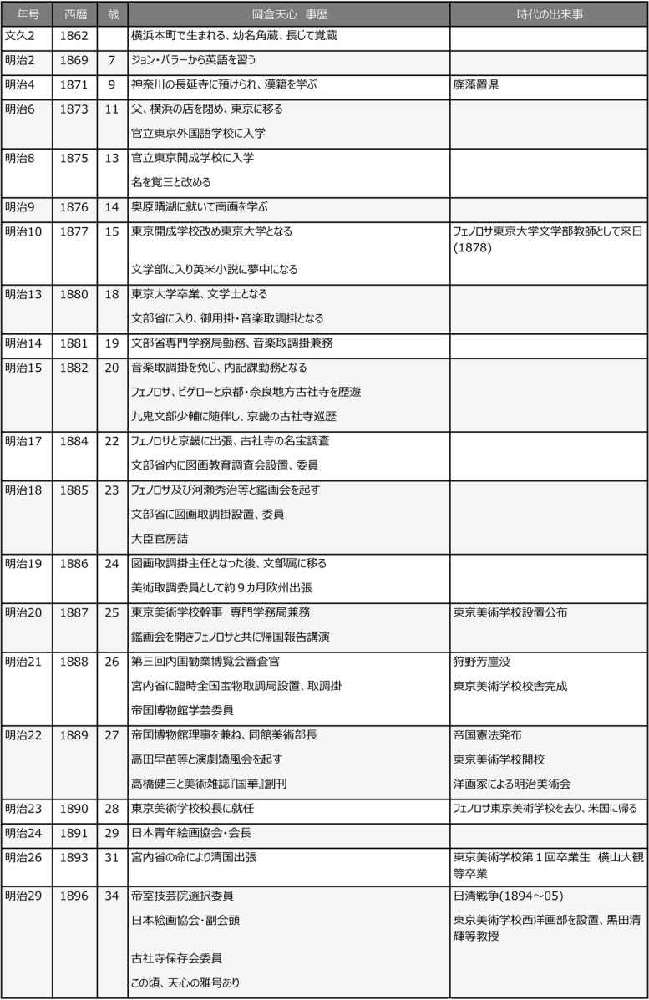
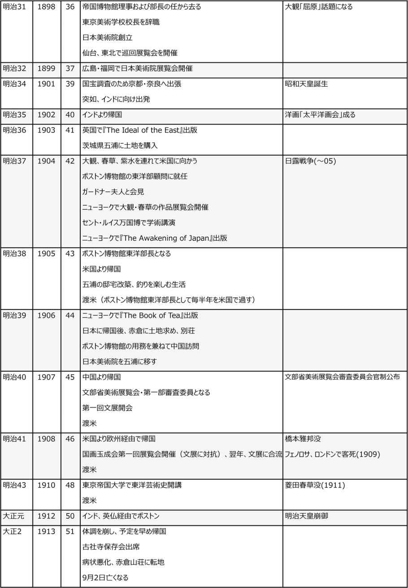
縮約
１．天心の生い立ち
横浜に生まれる
岡倉 天心 (幼名は角蔵、やや長じて覚蔵、大学在学中に覚三。天心は雅号)は、1862年(文久2年)、横浜で生まれた。福井藩士の父岡倉勘右衛門は、横浜で藩が経営する貿易商店の当主を務めていた。商売の中心は国産の生糸類の売り込みで、店には大勢の外国人が出入りしていた。そのため幼少から欧米人との接触があり、英語も日本語同様に話すことができたという。
当時横浜には、英語を教えるところがいくつかあり、中でも居留地にあったヘボンの語学校と伊勢山下の高島学校とがすぐれていた。天心は、高島学校でジョン・バラーという米国人から英語を習った。天心7歳のときである。
英語から習い始めたため、漢字が読めなかった。これを恥じた天心は、父に国語・国文の学習をしたいと伝え、菩提寺である神奈川の長延寺の玄導和尚に師事することになった。『大学』から始め、『論語』『中庸』『孟子』と漢学の常道を教わった。この間も伊勢山下まで通い、英語学習を続けた。
大学に入学
1871年(明治4年)、廃藩置県により藩士は消滅した。父は横浜の店を閉めることになり、東京に出て日本橋蠣 殻 町で旅館を営むことにした。東京に移転後、天心はすぐに神田一ツ橋外にあった官立外国語学校に入学したが、翌年1875年(明治8年)に神田錦町に開校した官立東京開成学校に移った。幕府時代の蕃書調所が前身で、後の帝国大学になる。総理(学校長)加藤弘之の下に、副総理の浜尾新 がいた。浜尾は早くも天心の才能の抜群なことに注目し、後年、天心に特別の目をかけた。この頃の開成学校の教師はほとんどが外国人で、講義も英語、答案も英文でなくては通じなかった。英語については天心には何の不自由もなかった。同学には、井上哲次郎や牧野伸顕がいた。
1877年(明治10年)には、学制改革があり、東京開成学校は東京医学校と合同して、新たに東京大学と名を改めた。法学部・理学部・文学部・医学部があり、天心は文学部に入り、政治学・理財学を選んでいたが、中村正直の漢文教室とウィリアム・ホートンの英文学教室に多大の関心を抱いた。天心は英米の小説を読むことに夢中になった。ある晩、牛肉屋で、たまたま学生仲間が顔を合わせ、高田早苗はスコットの『アイヴァンホー』を語り、福富孝季はデューマの『モンテ・クリスト』が面白いと言い、天心はヴィクトル・ユーゴーの『レ・ミゼラブル』をあげて気焔を吐いたというエピソードが残っている。
さまざまな芸事に手を染める天心
多情で、何事にも飽きやすい性格の天心は、学校の課程の学修では物足りず、その頃盛んになっていた文人画(専門画家でない、在野の文人の余技の絵)にはまることになる。大変ユニークな女性の奥原晴 湖 という人に師事し、文人画を覚えた。そのほかにも漢詩、琴曲を習ったりした。一般学生とは違い、多岐多端なことに手を染めた。
そうした性格が、天心の将来を決める出逢いをつくった。在学中の1878年(明治11年)、アーネスト・フェノロサという米国人が文学部教師として来任した。フェノロサは、ハーヴァード大学で学び、米国にいたときから東洋哲学、とくに仏教に興味を持っていた。日本に来てからすぐに日本の清新優雅な風土習俗に好感を抱き、ひまを見ては、古道具屋を訪れた。天心はいつの間にか、フェノロサの手伝いをするようになり、通訳や古書の翻訳などをした。天心も次第に骨董美術に興味を持つようになり、やがて国粋美術の復興を志すようになる。
２．文部省出仕、東京美術学校設立
文部省に就職
1880年(明治13年)、天心は東京大学を卒業し、文学士となった。18歳の若さで官職に就いた。卒業して、文部省に入り、音楽取調掛となった。学生の頃、才能を認めてもらった浜尾新の推挙で入省したが、その浜尾が翌年には文部省に入り、専門学務局長になった。
音楽取調掛に、有名なアメリカの音楽教育家ルーサー・メーソンが招聘され、官立音楽学校設立の準備に当たった。天心は通訳など、英語力を発揮し、メーソン夫妻からはとても可愛がられた。
卒業後も、フェノロサとの関係は続いていた。フェノロサは天心の助けを感謝していた。天心のほうも、次第に知識が増え、日本の古い絵画や美術品の鑑識眼も高まり、興味を強めていた。フェノロサはいろいろな場所で日本美術の優秀さについて講演を行ったが、そのほとんどは天心が通訳している。
音楽取調掛から美術掛に転勤
音楽教育調査のため米国に派遣されていた井沢修二が帰国し、音楽取調係長として天心の上位に就いた。井沢との関係を憂慮した浜尾は、天心を専門学務局内記課勤務に移して、音楽取調掛兼務とした。
1882年(明治15年)9月、文部少輔九鬼隆一の学事視察に随行して、京畿地方に出張した。同地の古社寺所蔵の古書画彫刻等の点検である。文部省の高官がこのとき視察に向かったのは、フェノロサの日本美術についての高い評価に刺激されて、官民先覚の間に国粋美術尊重の声が急速に高まってきたのを無視できなくなった文部省の新しい動きによるものであった。
維新以後、欧米文明への無差別の傾倒は、絵画においても油絵など洋風美術が求められ、古美術の排斥破壊まで起きるようになっていた。そこにフェノロサが日本美術の優秀さを説いて、西洋美術を斥けるのを聞いて、人心は急に日本美術の見直しへと傾いた。美術振興を援助するため来日した米国人富豪ビゲローの貢献も大きかった。
フェノロサと日本画家の狩野 芳 崖 の結びつきは画期的だった。天心にとっても新しいチャンスが訪れた。
東京美術学校の設立
1884年(明治17年)、文部省に図画教育調査会が設けられ、委員長のほか、4人の委員の中にフェノロサ、天心が選ばれた。翌年には、文部省に図画取調掛が設けられ、フェノロサ、岡倉天心、狩野芳崖、狩野友信が委員を命じられた。年が明けて、天心は掛主任として、東京美術学校創立準備に当たることになった。天心は、大臣官房詰を経て、1886年(明治19年)3月には、官吏として異例の進級である文部属にあげられ、欧州主張の準備のため、関西方面の巡視調査を命じられた。
同年、9月、ヨーロッパに向けて出発した。フェノロサが同行した。アメリカから、ビゲローも私費で一行に参加した。目的は、日本美術の伝統を基礎として教育を行う学校の設立のため、各国の美術教育および美術情勢を視察することだった。しかし、各国での美術教育や活動にさしたるものはなく、日本が固有の美術の高揚を高めるべきだという結論に達した。帰途、アメリカに立ち寄り、全権大使として赴任していた九鬼隆一を表敬訪問した後、1887年(明治20年)10月、帰国した。
日本に到着する直前に、東京美術学校設置が発表され、学校長事務取扱に専門学務局長の浜尾新に決まり、天心は幹事を命じられた。
政府は、1876年(明治9年)に、工部大学附属として洋画を教える美術学校を開き、イタリアから教師を招聘して純洋風の絵画・彫刻の指導を行っていたが、1883年(明治16年)に廃止した。そのわずか3年を過ぎたばかりで、純日本美術を教える東京美術学校を起こすことになったのである。時代の大きな変化を映し出している。
東京美術学校の設立にあたっては、フェノロサは外国人であり、中心にいた狩野芳崖は開校を待たずして病死した。開校の仕事は、すべて天心の肩にかかった。場所は上野公園にあった教育博物館を移した跡地に建てられた。1889年(明治22年)2月、開校となった。
天心はまだ27歳という若さだった。学校長心得となったが、浜尾専門学務局長の庇護を受け、事実上実権を持つ立場にあった。教授には画壇の大家がおり、フェノロサも教授として名を連ねていたが、すべては天心の意のままに動いた。ここを根拠地とし、手を宮内省に延ばして帝国博物館を掌中に収め、農商務省においては博覧会の文化部にも関わりを持った。古美術・新美術共に天心の支援と指導を求めた。圏外にあったのは洋画のみだったが、当時はまだ力をなすに至っていない。
宮内省は、米国から帰国した九鬼隆一が図書頭 に就任したのを機に、天心は、宮内省の臨時全国宝物取調局主任、やがて、帝国博物館の学芸委員から理事として同館美術部長を兼務した。こうして、東京美術学校と帝国博物館を掌中に収めた天心は、勢力を広め、1890年(明治23年)には東京美術学校の校長に就任した。天心にとってわが世の春となった。
中国の古文化探求旅行
1893年(明治26年)7月から12月初めまで、天心は中国の古美術調査のため清国に渡った。当時、清朝と日本との関係は国交断絶を前にして、内地深く入ることは危険極まりないことだった。若い青年を連れ、現地で通訳1名、従僕1人を加えて旅をした。危険を避けるため、服装は中国式に仮装し、洗面から食事まで一切中国風の習慣に従うほどの注意を払った。
北京から洛陽、西安、五丈 原 を経て成都に行き、重慶を回る旅だった。洛陽や西安などの荒れ果てた様子に驚いたが、ただこの間に竜門に登って石仏群を発見して喜びを露わにしている。そこから五丈原を過ぎ、成都では期待を裏切られて失望し、すぐに錦江を下り、重慶・漢口を過ぎ上海を発して東京についた。帰国して、「支那に支那なし」と報告したが、この大旅行によって得られた学術的効果は大きく、学界への貢献は少なくなかった。
その頃、日本美術協会から青年作家の俊英が脱会して、日本青年絵画協会をつくり、天心は会長に迎えられた。天心はこれを日本絵画協会にまとめ上げ、会頭には公爵の二条基弘を迎え、天心は副会頭となった。画家では、雅邦、玉章、広業、鞆音 、観山、大観、春草、丹陵、孤月、玉堂らの青年作家の俊秀が顔をそろえた。京都からも栖 鳳 や芳文等も参加した。
天心は、技巧の形式に堕した江戸時代の絵から脱却し、理念にもとづき生鮮な精神に活きて制作をするよう指導した。
３．失脚の後、日本美術院創立
東京美術学校長退職
絶好調の天心に、一転して破局が訪れた。天心が採用した美術学校の図按教授に福地復一という者がいた。機才に優れた者として天心は目をかけた。そのことを鼻にかけ、驕慢 専横 の行動をとるようになり、とくに天心が中国旅行で不在中は、自由勝手な振る舞いを続けた。さすがに橋本雅邦も耐え切れず、帰国した天心に告げた。天心は福地に京都方面に転任させようと図った。これに対し福地は天心排斥の策謀をめぐらせた。福地は、臨時博覧会副総裁の兼任を解かれて博物館館長の座も危ういとされていた九鬼に近づき、天心排除へと向かった。
1898年(明治31年)3月、天心は帝国博物館理事および部長の任から去った。しかし、事はそれに留まらなかった。さらに天心を誹謗中傷する怪文書が新聞社をはじめ官庁等に送られた。内容からみて一笑に付すべき種類のものだったが、意外にも当時の文部省をはじめ各方面においてこれを重視した。
天心は形勢不利とみて、辞表を提出して校外に去った。黒田清輝ら西洋画科一派を残して、教授、助教授から職員一同、痛憤激昂して辞表を出した。文部省は辞表を出した教職員の慰留に努めたが、横山大観ら17名は去っていった。思えば、天心が世に出て以来、十余年の長きにわたり、手にかけ心に抱いた理想の下に育て上げ、わが子のように育ててきた東京美術学校だった。
日本美術院の創立と活躍
ともかく、これに替わる何かをつくらねばならない。共に学校を辞めた教職員のこともある。私立美術学校の設立を進言する者もいたが、天心はつくるとすれば、東京美術学校の上をいく美術大学院だった。
思うと早い天心である。湯島天神前の空居を見つけて日本美術院創立事務所の看板を掲げた。芝公園の紅葉館で披露会を開き、名士150名が集まった。席上、創立資金30万円の募集計画を発表したが、容易に募金は集まるものではない。天心は意を決して、米国のビゲローに手紙を書いた。ビゲローからすぐに1万ドル(邦貨2万円)が送られてきた。これで計画は進み、谷中初音町に木造二階建ての研究所を新築した。
1898年(明治31)10月、多くの名士を招いて盛大な開院式が行われた。東京美術学校を追われてからわずか半年しか経っていない。天心は、開院式でも、正面に立つことを避け、雅邦が主幹の名で式辞を述べた。日本美術院の創立は、天心を師と仰ぐ大勢の青春作家の熱火の発憤があったからである。
展覧会が開かれた。錚々たる日本画家200名が出品した。中で縦5尺横10尺の大観が描いた「屈原」が話題を集めた。新聞、雑誌も、こぞって称賛する評論家の記事を載せた。これにより大観の名が一躍有名になるとともに、日本美術院の存在が全国に知られることとなった。
天心は、画家たちに語った。
「画家たる前に、美術家たる前に、まず日本人たれ、東洋人たれ、己れの持つものに、他に超えたる優秀のものあるを知れ。その伝統を今に活かして新時代に添うべき新美術を創開せよ、これがためには圏外のものも採って資となるものは進んで採れ、偏狭に堕するな、後れるな、成型を追うなかれ、我が陰を踏むなかれ、要は守るところを知って主客を過まらざるにあり、目指すところは時代に活きて吾れ自ら古えを成すにある」
作品の発表は、春と秋に東京で定期的に行われたが、注目すべきは地方巡遊である。地方は、新聞や雑誌で展覧会の盛況や作品の批評を読むことはできたが、実際に作品を見ることはできなかった。天心は、日本美術院開院の翌月から10日間、東京の陳列品の大部分を展示する催しを仙台で開催した。多数の美術作家が参加した。地方で実際に絵画を見ることは不可能だっただけに、連日、大盛況だった。さらに、仙台からに盛岡、秋田へと広げていった。翌年には、西に進み、広島と福岡で開催した。地方文化の開発には大きな効果があったが、日本美術院としては費用の持ち出しだった。
新画描法への批判
日清戦争を経て、わが国の国際的な地位も高まり、世はあげて洋々たる気運がみなぎっていた。美術界にあっては、洋画が勢いを増して、日本画は純美術ではないといった意見すらあった。欧米追随の空気が高まっていた。
日本画壇は、さらに日本的なものを追及し、新境地を開く必要があった。こうした中で生まれたのが、一切の線条をなくして、ただ色彩の変化と濃淡とを活かして描くという画描法である。寒暑冷暖、春夏秋冬、あるいは朝夕の異変感応を表すことができ、気分の変転までも図上に彷彿させるようにするものであった。
しかし、これに対して強い反発が起きた。洋画の模倣であるとか、日本の伝統を崩壊させるものといった批評が渦巻いた。江戸時代以来形式に堕した日本画とはおよそ異なるものだったため、観る人に異様な感を与えた。泥絵だ、化物絵だと酷評され、「朦朧画 」と呼ぶに至った。これを描いた大観や春草の名をしても、なす術はなかった。日本美術院の絵全部が悪名呼ばわりされ、四面楚歌に包まれることになった。
それでも大観や春草は、まったく動揺することはなかった。新しい日本の新美術樹立の信念はゆるぎないものだった。天心は、なお研鑽の必要があるとしながらも、この挑戦を高く評価した。しかし、日本美術院は秋風の落莫たる境地にあった。天心はその不満を酒で慰める荒れた日々となった。
そのような折である。あるきっかけで、天心はインドへ行くことを決心した。
４．海外での天心
突然のインド旅行
1901年(明治34年)11月、東京を出て、長崎から船でインドに向かった。インドでは歓待を受け、寺院や旧跡を見て回った。とりわけベンガルの豪族タゴール家と親しい関係になり、多くの便宜を得た。遠くヒマラヤに接する地まで足を延ばし、インドに残る雄大な古代文化に感嘆している。
インドには明治34年11月から35年10月までのほぼ1年間滞在した。そこで得た見聞を、帰国後の12月、東京帝国大学の史学会講演で発表した。美術発達の経路を4期に分けて説明し、インド研究に一石を投じることになった。
天心がこの旅行で知ったのは、在来一般に気概を失ったインド国民というイメージとは異なり、愛国の精神に燃える多くの青年がいることの現実だった。古跡名勝を歴訪して、アジア文化の特殊性の偉大さに感得し、西洋考古学者の諸説に抗議する理論的確信を得た。日本に帰ってすぐに、大観と春草をインドに行かせたのも、国内での騒擾を避けさせ、海外の空気に触れさせたいという天心の思いがあったからである。
しかし、帰国してすぐに目にしたのは、日本美術院の惨憺たる窮状だった。すぐにこれを救う手立てはなかった。そうした状況の中、在印中に寄稿し、イギリスのジョン・マレー社から出版予定だった本『The Ideals of the East』(東洋の理想)が1903年(明治36年)2月、公刊された。天心が英文で書いた処女作だった。
この吉報を受け取った後、茨城県の北端、太平洋を望む景勝の地、常陸の五 浦 に古民家を見つけて修理し居住とした。
英文著書『東洋の理想』
この本の序文に、英国婦人で新興インド教の信者ニヴェダイタ女史の長文の序辞が載っているので、ジョン・マレー社との出版交渉は彼女が行ったものであろう。
開巻劈頭 、Asia is One で始まる。崇高な宗教的基礎の下に発達したインド文明も、道徳の上に重要な点を盛って発展した中国の古文明も、共にアジア民族に共通する思想・感情の拡がりであるに過ぎないとする。最後に日本は、現在すべての方面に発達する情勢を説き、日本こそ正に東洋美術の一大博物館たる地を占めるものであると結んでいる。
ロンドン・タイムズに載った本書批評の概略が邦訳され、雑誌『太陽』と『早稲田学報』に紹介されたが、おそらく原書を手にした日本人はほとんどなかったかと思われる。村岡博によって邦訳され、岩波文庫本として出版されたのは、天心の死後16年経った1929年(昭和4年)だった。
米国訪問
インドから帰国して1年過ぎた1904年(明治37年)、大観と春草、それに蒔絵の六角紫水を連れて米国に渡った。一行は和装でニューヨークを闊歩した。ちょうど、日露戦争を戦っているときだった。同行した紫水が、米国への出発に先だち、和服のほうがよいかどうか天心に訊ねたら、英語を自由に話せたら和服の方がいいでしょうと答えたという。天心ならではの言葉である。
ニューヨークを後にして、一行と分かれ、天心はビゲローの案内で米国の雅邦とも呼ばれたラファーヂに会って歓談し、その紹介によりボストン女王の称号を持つイサベラ・スチュワード・ガードナー女史と面談した。ガードナーは莫大な富を持つ有閑婦人だが、芸術の保護・保存に尽くし、日本の美術に理解を持っていた。これがやがて実を結び、晩年に至り天心が大半をボストンで過ごすことになるきっかけとなった。
このときボストン博物館を訪れた。ボストン博物館は、東洋美術品の一大コレクションを持っていた。明治維新の直後から明治20年頃までの混迷期に、低廉に無造作に集められたものが根幹をなしていた。絵画は軸物・屏風を合わせて3600余点、蒔絵類5－600点、金属工芸品2000点、刀剣類が4－500点、鍔 1000点、浮世絵版画2万点を数えた。これらはほとんど雑然とした放任状態にあった。それをここに、改めて天心を迎えて、東洋部顧問とし、これら全部の整理と解説と補修を任せたいということに発展した。容易ならぬ大事業であり、即刻に具体的なことまで協定するには至り得なかったが、その後、ボストン博物館とは、毎年その半季をボストンにおいて送るという契約を結び、1905年(明治38年)5月に一応日本に帰った。
米国滞在中、天心はセント・ルイスで開かれていた万国博覧会の学術大会に出席する偶然の機会を得た。世界各国から学界の権威が参会した。日本からは理学博士の箕 作 佳吉、法学博士穂積陳 重 、医学博士北里柴三郎がいた。箕作の講演のときは60人に満たなかったが、天心の講演は超満員となった。天心はいつも通り、紋付きの羽織袴で登壇し、「絵画における近代の諸問題」という題で、聴衆を魅惑する巧妙な英語で話した。美の真の意義から始めて、過去・現在を概観し、欧米の絵画が機械文明の圧迫を受けて痛撃を蒙っているとき、日本の美術は純正なる伝統の下に独自の発達を遂げ、欧米の風潮に力強く反抗していると結び、満堂を魅了したという。講演を終わると各国の雑誌記者が取り囲み、寄稿を要請した。
英文著書『日本の覚醒』
上記滞米中、『The Awakening of Japan』(日本の覚醒)が出版された。その内容は、セント・ルイスでの講演よりもさらに強く鋭く欧米文明を痛撃するものだった。ちょうどそのとき、日本はロシアに勝利し、日本への関心が高まった。しかし、それは最初は好奇心と小弱国に対する一種の同情の表れでもあった。だが、意外の驚きは、警戒ともなり、さらに憎悪を生むようになった。日本は、外交を通じて、米英に感謝の意を伝えていたが、儀礼的なものに終わっていた。
そのような時期に、天心は真っ向から西欧の横暴を非難し、日本の存在を訴えたのである。まず、欧米がアジアで行った侵略奪略行為を非難するとともに、日本の興起は徳川時代以来の欧米からの隔離の間に醸成された文化によるものであることを訴えた。日本が西洋から学んだように、今度は西洋が東洋から学ぶべきときではないかと論じたのである。当時西欧に広がっていた「黄禍」(Yellow Peril)の語をとらえて、これに代わる「白禍」(White Disaster)の語をもって白色人種の暴戻 を流布 しなければならないと、軽妙巧緻 に反論し、読む人を唖然とさせた。
この本に最初に賛辞を書いたのは、大統領ルーズヴェルト夫人だったといわれる。ともかく、人気は人気を呼び、天心の名は世界に知られることとなった。痛烈な欧米批判にもかかわらず、好意的に受け取られたのは、天心のあくどさのない、詩的ともいえる巧妙な英語表現をもって単刀直入に問題を突いたところにある。
大観・春草の絵画展を開く
渡米にあたり、天心は大観と春草を連れて行った。国内では、戦争に国民は昂揚感を高め、芸術に対する関心を失っていた。そのような折、国内にとどまっているよりも、海外で新たな気分を養うべきだと考えたからにほかならなかった。
渡米に必要な資金は最初から十分ではなかったが、米国に着いてからはさらに困窮するようになった。そこで、天心は、大観と春草に急きょ各々20点の絵を画かせ、ラファーヂと相談して、ニューヨーク第一の展覧会場センチュリー・アソシエーションで、展覧会を開いた。天心がいろいろ根回ししたこともあって、予想外の好成績をおさめ、さらにボストン、ワシントンでも開催して人気を博した。これで懐は潤沢となり、ヨーロッパにまで足を延ばすことができた。
英文著書『茶の本』
1年半ぶりに米国から戻った天心は、日本美術院の惨状を見て驚いた。神聖であるべき教室が木炭倉庫になっていたのである。戦争によって人心は荒 さみ、美術方面のことなど顧みられようもなく、美術院の事務局は学校の維持ができなくなった。仕方なく、秩父方面から多量の木炭を仕入れ、これを販売して急をしのいでいたのだった。
傷心した天心は、五浦に行き、船を海上に浮かべて釣魚に明け暮れる浮世離れの生活を始めた。その年の10月、ボストン博物館との約束を果たすため渡米した。多忙な美術館での仕事の余暇に書いたのが『The Book of Tea』(茶の本)である。
公刊されたのは1906年(明治39年)5月である。日露戦争を経て、日本の名は世界に知られるようになったが、好戦国民と誤解され、武士道も野蛮な国という印象を与えていた。これを見て天心は、本を書く決心をした。日本人が茶や花を愛玩する美風の在ることを基本に、日常を優雅に活き、平和愛好を国民性として保っている日本本来の姿を紹介したいと思った。
英文は、前2巻の著書よりはるかに洗練された風格のあるものになっている。出版されるや、たちまち全米で有名になり、欧州でも仏文、独文に訳されて広く読まれることになった。岡倉の名は全世界に広まり、日本でも敬意を払う者もいたが、本書が日本語に訳され出版されるのは、天心没後16年を過ぎてからである。
５．国内での活動その後
五浦と赤倉
世界に名をなした天心も、日本の社会においては受け入れられなかった。あまりに先を見越し、高い理想に人々はついて行くことができないでいた。未だに、数年前のそのままに嫌忌され排斥され、快く迎えてくれる者はほとんどいなかった。
これに対し、米国ではまったく違っていた。ボストン博物館では初めの東洋部顧問から東洋部長となり、館長同様の待遇を受けた。それでも天心は常住を欲しなかった。半年を日本で暮らし、日本の風土を楽しんだ。
インドから帰国したときに手に入れた五浦の景色を天心は心より楽しんだ。住まいを新築し、家族とともに暮らした。海に出て、釣りを楽しんだ。
1906年(明治39年)に米国から帰国後、越後高田に遊び、たまたま登った赤倉高原の広大な景色に心を奪われた。登山もスキーもまだなかった時代で、何もない空漠たる大自然のままだったが、ここに広大な土地を購入した。のちにその最大部分を陸軍省の演習地に買収されることになるが、そのほかも売却された土地を除いても1100坪余の土地が残るほどだった。冬は五浦、夏は赤倉という生活を送った。
五浦に日本美術院を移す
五浦は、5つの突端があって5つの浦を作っていることからこの名がついた。三方は丘陵に囲まれ、東の一方だけが開いて太平洋に面しているという別天地である。その中の最も広い突端で平らな土地1500坪を買い、その後、漸次付近の土地を買い増した。
天心はここに日本美術院を移すことを決めた。大観、春草、に五浦に移住するよう命じ、続いて観山、そして木村武山を加えた。それぞれが住む家も建て、日本美術院の研究所も新築した。天心の居室のほか、4人の作画室と、研究会員のための作画室が設けられ、東京から多くの新進画家がここを訪れ、天心の教えを乞うた。
文展と国画玉成会
1907年(明治40年)、文部省が主催する美術展覧会が毎年定期的に開催されることが決まり、「文展」と呼ばれた。美術関係者はみなこれを歓迎した。時の文相は天心と親交のあった牧野伸顕だった。会は三部に分かれ、第一部が日本画、第二部が洋画、第三部が彫刻だった。
しかし、審査委員の選定で躓いた。洋画と彫刻は容易に決定されたが、日本画では天心の指名をめぐって紛争が起きた。文部省は天心を嫌って審査委員に入れることを拒んだが、雅邦が天心なくては意味がないと強硬姿勢を見せ、なんとか折り合いがつき、天心を含み、新たに審査委員を増やすことで決着した。しかし、今度は旧派系統の画家たちが審査委員の顔ぶれを見て激怒し、これに反抗、新派作家も団結して対抗するなど、険悪状態になった。ともあれ、第1回の官設展覧会は無事開催され、盛大のうちに終わった。
しかし、翌年、牧野伸顕が文相を去り、守旧派が勢力を強め、天心一派は、文展への不出展を決め、別に国画玉成会をつくり展覧会を同期日、同じ上野公園に会場を設けて独自の展覧会を開催した。だが翌年は、両者の妥協が成り、玉成会の展覧会は第1回のみで終わった。
晩年の天心
ボストンでは、破格の厚遇を受け、自由、かつ精力的に博物館での仕事こなした天心だったが、日本に帰ると隠棲 の気分に浸ろうと努めていた。しかし、祖国愛はますます高まっていた。東京帝国大学から東洋美術史の講座を担当するよう要請を受けた。
東大総長はかつて目をかけてくれた浜尾新だった。文科大学長には天心の同学だった井上哲次郎が就任していた。天心はこのことにたいへん喜んだ。1910年(明治43年)4月から7月までの1学期間、週1回2時間の講義を行った。聴講生はきわめて多く、学外からも講義を聞きたいと申し出た者もいた。
思えば、東京帝国大学を出たのが18歳、文部省に入り、東京美術学校の設立に尽力し、校長に就任したのは28歳のときだった。追われて官途を去り、日本美術院を設立するも、挫折し、インドに遊び、その後米国に行き、大喝采を浴びた。それと裏腹に、日本では生涯受け入れられることは少なかった。
文展の審査委員の問題が起きた頃、天心はもはや往年の闊達豪放さを失っていた。1912年(大正元年)11月、インドから英仏を経由してボストンに着いたが、気分勝れず、マサチュウセッツ州の山間の景勝地で静養したが回復しなかった。翌年2月、予定を早めて帰国した。五浦で新しく作らせた船も遠海に出かけることもできず、健康は益々思わしくなかった。8月には、古社寺保存会に出席して法隆寺壁画の調査保存を提議した。直ちに病床に入ったが、避暑のため赤倉の山荘に移った。
到着して間もなく発作を起こし、その後病勢は悪化、五浦から妻の基子、東京から一雄夫妻に、弟の由三郎、愛娘米山高麗子、そして門弟の横山大観、下村観山、橋本雅邦未亡人、六角紫水、岡崎雪声、河合玉堂らが急を聞いて赤倉にやってきた。医師は手を尽くしたが、家族、愛する弟子たちに囲まれて、永遠の眠りについた。
享年51歳で天心の波瀾に満ちた一生は終わった。
著者紹介
平田 周三 （ヒラタ シュウゾウ）
ニュービジネス設計家。現在、一般社団法人グローバライズ沖縄理事、三田教育研究所LLP客員研究。大手化学会社、外資系コンサルティング会社、中小企業、ベンチャー(起業)、大学教授など、さまざまな職域で一貫して新事業企画開発を手掛けてきた。事業分野は、それぞれの時代を象徴する先端的なもので、1960年代：石油化学(合成繊維・エンジニアリングプラスチック)、1970年代：消費者製品(カーペット、床材)、1980年代：エネルギー(原子力)、1990年代(インターネット)、2000年代：デジタルコンテンツ(海外発信)、2010年代：英語教育(自動翻訳)で、新事業を実現させた。
[明治150周年記念]
名著から問題を読み解く！
明治から日本の未来を考える (4)
明治人物誌④
発行日 平成30 年2月1日
著 者 平田 周三
発 行 株式会社ＩＣＥ
東京都千代田区神田神保町１―１０５
（本の内容に関するお問い合わせ先）
quickbooks_info@impress.co.jp
発 売 株式会社インプレス
Copyright© 2018 Shuzo Hirata All rights reserved.